Incorporating temporal gene expression into analysis of genes with peaks
lecook
2022-02-23
Last updated: 2022-05-04
Checks: 7 0
Knit directory: chipseq-cross-species/
This reproducible R Markdown analysis was created with workflowr (version 1.7.0). The Checks tab describes the reproducibility checks that were applied when the results were created. The Past versions tab lists the development history.
Great! Since the R Markdown file has been committed to the Git repository, you know the exact version of the code that produced these results.
Great job! The global environment was empty. Objects defined in the global environment can affect the analysis in your R Markdown file in unknown ways. For reproduciblity it’s best to always run the code in an empty environment.
The command set.seed(20220209) was run prior to running the code in the R Markdown file. Setting a seed ensures that any results that rely on randomness, e.g. subsampling or permutations, are reproducible.
Great job! Recording the operating system, R version, and package versions is critical for reproducibility.
Nice! There were no cached chunks for this analysis, so you can be confident that you successfully produced the results during this run.
Great job! Using relative paths to the files within your workflowr project makes it easier to run your code on other machines.
Great! You are using Git for version control. Tracking code development and connecting the code version to the results is critical for reproducibility.
The results in this page were generated with repository version f916ef0. See the Past versions tab to see a history of the changes made to the R Markdown and HTML files.
Note that you need to be careful to ensure that all relevant files for the analysis have been committed to Git prior to generating the results (you can use wflow_publish or wflow_git_commit). workflowr only checks the R Markdown file, but you know if there are other scripts or data files that it depends on. Below is the status of the Git repository when the results were generated:
Ignored files:
Ignored: .RData
Ignored: .Rhistory
Ignored: analysis/.RData
Ignored: analysis/.Rhistory
Ignored: analysis/figure/
Ignored: data/genomic_data/
Ignored: data/geo_submission/
Ignored: output/annotations/
Ignored: output/bam_files/
Ignored: output/filtered_peaks/
Ignored: output/logs/
Ignored: output/peaks/
Ignored: output/plots/
Ignored: output/qc/A-1_input.SeqDepthNorm.bw
Ignored: output/qc/A-1_input.SeqDepthNorm_dunnart_downSampled.bw
Ignored: output/qc/A-1_input.ccurve.txt
Ignored: output/qc/A-1_input.extrap.txt
Ignored: output/qc/A-1_input_R1_trimmed.fastq.gz
Ignored: output/qc/A-1_input_est_lib_complex_metrics.txt
Ignored: output/qc/A-2_H3K4me3.SeqDepthNorm.bw
Ignored: output/qc/A-2_H3K4me3.SeqDepthNorm_dunnart_downSampled.bw
Ignored: output/qc/A-2_H3K4me3.ccurve.txt
Ignored: output/qc/A-2_H3K4me3.extrap.txt
Ignored: output/qc/A-2_H3K4me3_R1_trimmed.fastq.gz
Ignored: output/qc/A-2_H3K4me3_est_lib_complex_metrics.txt
Ignored: output/qc/A-2_H3K4me3_vs_A-1_input.frip_default.txt
Ignored: output/qc/A-2_H3K4me3_vs_A-1_input.frip_default_dunnart_downSampled.txt
Ignored: output/qc/A-2_H3K4me3_vs_A-1_input.frip_p0.01_dunnart_downSampled.txt
Ignored: output/qc/A-3_H3K27ac.SeqDepthNorm.bw
Ignored: output/qc/A-3_H3K27ac.SeqDepthNorm_dunnart_downSampled.bw
Ignored: output/qc/A-3_H3K27ac.ccurve.txt
Ignored: output/qc/A-3_H3K27ac.extrap.txt
Ignored: output/qc/A-3_H3K27ac_R1_trimmed.fastq.gz
Ignored: output/qc/A-3_H3K27ac_est_lib_complex_metrics.txt
Ignored: output/qc/A-3_H3K27ac_vs_A-1_input.frip_default.txt
Ignored: output/qc/A-3_H3K27ac_vs_A-1_input.frip_default_dunnart_downSampled.txt
Ignored: output/qc/A-3_H3K27ac_vs_A-1_input.frip_p0.01_dunnart_downSampled.txt
Ignored: output/qc/B-1_input.SeqDepthNorm.bw
Ignored: output/qc/B-1_input.SeqDepthNorm_dunnart_downSampled.bw
Ignored: output/qc/B-1_input.ccurve.txt
Ignored: output/qc/B-1_input.extrap.txt
Ignored: output/qc/B-1_input_R1_trimmed.fastq.gz
Ignored: output/qc/B-1_input_est_lib_complex_metrics.txt
Ignored: output/qc/B-2_H3K4me3.SeqDepthNorm.bw
Ignored: output/qc/B-2_H3K4me3.SeqDepthNorm_dunnart_downSampled.bw
Ignored: output/qc/B-2_H3K4me3.ccurve.txt
Ignored: output/qc/B-2_H3K4me3.extrap.txt
Ignored: output/qc/B-2_H3K4me3_R1_trimmed.fastq.gz
Ignored: output/qc/B-2_H3K4me3_est_lib_complex_metrics.txt
Ignored: output/qc/B-2_H3K4me3_vs_B-1_input.frip_default.txt
Ignored: output/qc/B-2_H3K4me3_vs_B-1_input.frip_default_dunnart_downSampled.txt
Ignored: output/qc/B-2_H3K4me3_vs_B-1_input.frip_p0.01_dunnart_downSampled.txt
Ignored: output/qc/B-3_H3K27ac.SeqDepthNorm.bw
Ignored: output/qc/B-3_H3K27ac.SeqDepthNorm_dunnart_downSampled.bw
Ignored: output/qc/B-3_H3K27ac.ccurve.txt
Ignored: output/qc/B-3_H3K27ac.extrap.txt
Ignored: output/qc/B-3_H3K27ac_R1_trimmed.fastq.gz
Ignored: output/qc/B-3_H3K27ac_est_lib_complex_metrics.txt
Ignored: output/qc/B-3_H3K27ac_vs_B-1_input.frip_default.txt
Ignored: output/qc/B-3_H3K27ac_vs_B-1_input.frip_default_dunnart_downSampled.txt
Ignored: output/qc/B-3_H3K27ac_vs_B-1_input.frip_p0.01_dunnart_downSampled.txt
Ignored: output/qc/ENCFF011NFM_E12.5_H3K27ac.SeqDepthNorm.bw
Ignored: output/qc/ENCFF011NFM_vs_ENCFF058AUT_E12.5_H3K27ac.frip.txt
Ignored: output/qc/ENCFF011NFM_vs_ENCFF058AUT_E12.5_H3K27ac_downSampled.frip.txt
Ignored: output/qc/ENCFF045IPK_E10.5_H3K4me3.SeqDepthNorm_mouse.bw
Ignored: output/qc/ENCFF045IPK_vs_ENCFF825AVI_E10.5_H3K4me3.frip.txt
Ignored: output/qc/ENCFF045IPK_vs_ENCFF825AVI_E10.5_H3K4me3_downSampled.frip.txt
Ignored: output/qc/ENCFF124TAB_E13.5_H3K4me3.SeqDepthNorm_mouse.bw
Ignored: output/qc/ENCFF124TAB_vs_ENCFF248PGK_E13.5_H3K4me3.frip.txt
Ignored: output/qc/ENCFF124TAB_vs_ENCFF248PGK_E13.5_H3K4me3_downSampled.frip.txt
Ignored: output/qc/ENCFF124UYX_E10.5_H3K4me3.SeqDepthNorm_mouse.bw
Ignored: output/qc/ENCFF124UYX_vs_ENCFF157KEH_E10.5_H3K4me3.frip.txt
Ignored: output/qc/ENCFF124UYX_vs_ENCFF157KEH_E10.5_H3K4me3_downSampled.frip.txt
Ignored: output/qc/ENCFF182ZPF_E12.5_H3K4me3.SeqDepthNorm_mouse.bw
Ignored: output/qc/ENCFF182ZPF_vs_ENCFF203JQV_E12.5_H3K4me3.frip.txt
Ignored: output/qc/ENCFF182ZPF_vs_ENCFF203JQV_E12.5_H3K4me3_downSampled.frip.txt
Ignored: output/qc/ENCFF194ORC_E13.5_H3K27ac.SeqDepthNorm.bw
Ignored: output/qc/ENCFF194ORC_vs_ENCFF117QRC_E13.5_H3K27ac.frip.txt
Ignored: output/qc/ENCFF194ORC_vs_ENCFF117QRC_E13.5_H3K27ac_downSampled.frip.txt
Ignored: output/qc/ENCFF213EBC_E10.5_H3K27ac.SeqDepthNorm.bw
Ignored: output/qc/ENCFF213EBC_vs_ENCFF157KEH_E10.5_H3K27ac.frip.txt
Ignored: output/qc/ENCFF213EBC_vs_ENCFF157KEH_E10.5_H3K27ac_downSampled.frip.txt
Ignored: output/qc/ENCFF258KCR_E15.5_H3K4me3.SeqDepthNorm_mouse.bw
Ignored: output/qc/ENCFF258KCR_vs_ENCFF727QTS_E15.5_H3K4me3.frip.txt
Ignored: output/qc/ENCFF258KCR_vs_ENCFF727QTS_E15.5_H3K4me3_downSampled.frip.txt
Ignored: output/qc/ENCFF290ZNF_E13.5_H3K27ac.SeqDepthNorm.bw
Ignored: output/qc/ENCFF290ZNF_vs_ENCFF248PGK_E13.5_H3K27ac.frip.txt
Ignored: output/qc/ENCFF290ZNF_vs_ENCFF248PGK_E13.5_H3K27ac_downSampled.frip.txt
Ignored: output/qc/ENCFF327VAO_E14.5_H3K27ac.SeqDepthNorm.bw
Ignored: output/qc/ENCFF327VAO_vs_ENCFF784ORI_E14.5_H3K27ac.frip.txt
Ignored: output/qc/ENCFF327VAO_vs_ENCFF784ORI_E14.5_H3K27ac_downSampled.frip.txt
Ignored: output/qc/ENCFF394TZN_E12.5_H3K27ac.SeqDepthNorm.bw
Ignored: output/qc/ENCFF394TZN_vs_ENCFF203JQV_E12.5_H3K27ac.frip.txt
Ignored: output/qc/ENCFF394TZN_vs_ENCFF203JQV_E12.5_H3K27ac_downSampled.frip.txt
Ignored: output/qc/ENCFF401BKM_E15.5_H3K4me3.SeqDepthNorm_mouse.bw
Ignored: output/qc/ENCFF401BKM_vs_ENCFF182XFG_E15.5_H3K4me3.frip.txt
Ignored: output/qc/ENCFF401BKM_vs_ENCFF182XFG_E15.5_H3K4me3_downSampled.frip.txt
Ignored: output/qc/ENCFF485UDC_E13.5_H3K4me3.SeqDepthNorm_mouse.bw
Ignored: output/qc/ENCFF485UDC_vs_ENCFF117QRC_E13.5_H3K4me3.frip.txt
Ignored: output/qc/ENCFF485UDC_vs_ENCFF117QRC_E13.5_H3K4me3_downSampled.frip.txt
Ignored: output/qc/ENCFF512SFE_E11.5_H3K27ac.SeqDepthNorm.bw
Ignored: output/qc/ENCFF512SFE_vs_ENCFF184CUE_E11.5_H3K27ac.frip.txt
Ignored: output/qc/ENCFF512SFE_vs_ENCFF184CUE_E11.5_H3K27ac_downSampled.frip.txt
Ignored: output/qc/ENCFF515PKL_E11.5_H3K27ac.SeqDepthNorm.bw
Ignored: output/qc/ENCFF515PKL_vs_ENCFF376FGM_E11.5_H3K27ac.frip.txt
Ignored: output/qc/ENCFF515PKL_vs_ENCFF376FGM_E11.5_H3K27ac_downSampled.frip.txt
Ignored: output/qc/ENCFF548BRR_E10.5_H3K27ac.SeqDepthNorm.bw
Ignored: output/qc/ENCFF548BRR_vs_ENCFF825AVI_E10.5_H3K27ac.frip.txt
Ignored: output/qc/ENCFF548BRR_vs_ENCFF825AVI_E10.5_H3K27ac_downSampled.frip.txt
Ignored: output/qc/ENCFF584JFB_E15.5_H3K27ac.SeqDepthNorm.bw
Ignored: output/qc/ENCFF584JFB_vs_ENCFF727QTS_E15.5_H3K27ac.frip.txt
Ignored: output/qc/ENCFF584JFB_vs_ENCFF727QTS_E15.5_H3K27ac_downSampled.frip.txt
Ignored: output/qc/ENCFF665QBJ_E14.5_H3K4me3.SeqDepthNorm_mouse.bw
Ignored: output/qc/ENCFF665QBJ_vs_ENCFF002HZV_E14.5_H3K4me3.frip.txt
Ignored: output/qc/ENCFF665QBJ_vs_ENCFF002HZV_E14.5_H3K4me3_downSampled.frip.txt
Ignored: output/qc/ENCFF707WKL_E15.5_H3K27ac.SeqDepthNorm.bw
Ignored: output/qc/ENCFF707WKL_vs_ENCFF182XFG_E15.5_H3K27ac.frip.txt
Ignored: output/qc/ENCFF707WKL_vs_ENCFF182XFG_E15.5_H3K27ac_downSampled.frip.txt
Ignored: output/qc/ENCFF717QDV_E11.5_H3K4me3.SeqDepthNorm_mouse.bw
Ignored: output/qc/ENCFF717QDV_vs_ENCFF376FGM_E11.5_H3K4me3.frip.txt
Ignored: output/qc/ENCFF717QDV_vs_ENCFF376FGM_E11.5_H3K4me3_downSampled.frip.txt
Ignored: output/qc/ENCFF724DMU_E14.5_H3K4me3.SeqDepthNorm_mouse.bw
Ignored: output/qc/ENCFF724DMU_vs_ENCFF784ORI_E14.5_H3K4me3.frip.txt
Ignored: output/qc/ENCFF724DMU_vs_ENCFF784ORI_E14.5_H3K4me3_downSampled.frip.txt
Ignored: output/qc/ENCFF760QYZ_E11.5_H3K4me3.SeqDepthNorm_mouse.bw
Ignored: output/qc/ENCFF760QYZ_vs_ENCFF184CUE_E11.5_H3K4me3.frip.txt
Ignored: output/qc/ENCFF760QYZ_vs_ENCFF184CUE_E11.5_H3K4me3_downSampled.frip.txt
Ignored: output/qc/ENCFF902HAR_E14.5_H3K27ac.SeqDepthNorm.bw
Ignored: output/qc/ENCFF902HAR_vs_ENCFF002HZV_E14.5_H3K27ac.frip.txt
Ignored: output/qc/ENCFF902HAR_vs_ENCFF002HZV_E14.5_H3K27ac_downSampled.frip.txt
Ignored: output/qc/ENCFF941QJZ_E12.5_H3K4me3.SeqDepthNorm_mouse.bw
Ignored: output/qc/ENCFF941QJZ_vs_ENCFF058AUT_E12.5_H3K4me3.frip.txt
Ignored: output/qc/ENCFF941QJZ_vs_ENCFF058AUT_E12.5_H3K4me3_downSampled.frip.txt
Ignored: output/qc/H3K27ac_multibamsum.npz
Ignored: output/qc/H3K27ac_multibamsum.tab
Ignored: output/qc/H3K27ac_multibamsum_mouse.npz
Ignored: output/qc/H3K27ac_multibamsum_mouse.txt
Ignored: output/qc/H3K27ac_pearsoncor_multibamsum_matrix_mouse.txt
Ignored: output/qc/H3K4me3_multibamsum_mouse.npz
Ignored: output/qc/H3K4me3_multibamsum_mouse.txt
Ignored: output/qc/H3K4me3_pearsoncor_multibamsum_matrix_mouse.txt
Ignored: output/qc/bamPEFragmentSize_rawcounts.tab
Ignored: output/qc/bamPEFragmentSize_rawcounts_dunnart_downSampled.tab
Ignored: output/qc/multiBAM_fingerprint_metrics.txt
Ignored: output/qc/multiBAM_fingerprint_metrics_dunnart_downSampled.txt
Ignored: output/qc/multiBAM_fingerprint_rawcounts.txt
Ignored: output/qc/multiBAM_fingerprint_rawcounts_dunnart_downSampled.txt
Ignored: output/qc/multibamsum.npz
Ignored: output/qc/multibamsum.tab
Ignored: output/qc/multibamsum_dunnart_downSampled.npz
Ignored: output/qc/multibamsum_dunnart_downSampled.tab
Ignored: output/qc/multibamsum_mouse.npz
Ignored: output/qc/multibamsum_mouse.tab
Ignored: output/qc/pearsoncor_multibamsum_matrix.txt
Ignored: output/qc/pearsoncor_multibamsum_matrix_dunnart_downSampled.txt
Ignored: output/qc/pearsoncor_multibamsum_matrix_mouse.txt
Ignored: output/wga/
Untracked files:
Untracked: .snakemake/
Untracked: Rplots.pdf
Untracked: cluster2_enrichGO.txt
Untracked: code/go_semantic_similarity.R
Untracked: data/raw_reads/
Untracked: enhancer_peak_comparison_to_clusters.txt
Untracked: enhancer_upset_matrix_comparison_to_clusters.txt
Untracked: output/liftover/
Untracked: output/qc/A-1_input.downSampled.flagstat.qc
Untracked: output/qc/A-2_H3K4me3.downSampled.flagstat.qc
Untracked: output/qc/A-3_H3K27ac.downSampled.flagstat.qc
Untracked: output/qc/B-1_input.downSampled.flagstat.qc
Untracked: output/qc/B-2_H3K4me3.downSampled.flagstat.qc
Untracked: output/qc/B-3_H3K27ac.downSampled.flagstat.qc
Untracked: output/qc/E10.5_H3K27ac.pooled.macs2
Untracked: output/qc/E10.5_H3K27ac.pooled.macs2_downSampled
Untracked: output/qc/E10.5_H3K4me3.pooled.macs2
Untracked: output/qc/E10.5_H3K4me3.pooled.macs2_downSampled
Untracked: output/qc/E10.5_H3K4me3.pooled.macs2_downSampled.log
Untracked: output/qc/E11.5_H3K27ac.pooled.macs2
Untracked: output/qc/E11.5_H3K27ac.pooled.macs2_downSampled
Untracked: output/qc/E11.5_H3K4me3.pooled.macs2
Untracked: output/qc/E11.5_H3K4me3.pooled.macs2_downSampled
Untracked: output/qc/E11.5_H3K4me3.pooled.macs2_downSampled.log
Untracked: output/qc/E12.5_H3K27ac.pooled.macs2
Untracked: output/qc/E12.5_H3K27ac.pooled.macs2_downSampled
Untracked: output/qc/E12.5_H3K4me3.pooled.macs2
Untracked: output/qc/E12.5_H3K4me3.pooled.macs2_downSampled
Untracked: output/qc/E12.5_H3K4me3.pooled.macs2_downSampled.log
Untracked: output/qc/E13.5_H3K27ac.pooled.macs2
Untracked: output/qc/E13.5_H3K27ac.pooled.macs2_downSampled
Untracked: output/qc/E13.5_H3K4me3.pooled.macs2
Untracked: output/qc/E13.5_H3K4me3.pooled.macs2_downSampled
Untracked: output/qc/E13.5_H3K4me3.pooled.macs2_downSampled.log
Untracked: output/qc/E14.5_H3K27ac.pooled.macs2
Untracked: output/qc/E14.5_H3K27ac.pooled.macs2_downSampled
Untracked: output/qc/E14.5_H3K4me3.pooled.macs2
Untracked: output/qc/E14.5_H3K4me3.pooled.macs2_downSampled
Untracked: output/qc/E14.5_H3K4me3.pooled.macs2_downSampled.log
Untracked: output/qc/E15.5_H3K27ac.pooled.macs2
Untracked: output/qc/E15.5_H3K27ac.pooled.macs2_downSampled
Untracked: output/qc/E15.5_H3K4me3.pooled.macs2
Untracked: output/qc/E15.5_H3K4me3.pooled.macs2_downSampled
Untracked: output/qc/E15.5_H3K4me3.pooled.macs2_downSampled.log
Untracked: output/qc/ENCFF002HZV_E14.5_H3K27ac.dupmark.qc
Untracked: output/qc/ENCFF002HZV_E14.5_H3K4me3.dupmark.qc
Untracked: output/qc/ENCFF011NFM_E12.5_H3K27ac.dedup.flagstat.qc
Untracked: output/qc/ENCFF011NFM_E12.5_H3K27ac.downSampled.flagstat.qc
Untracked: output/qc/ENCFF011NFM_E12.5_H3K27ac.dupmark.flagstat.qc
Untracked: output/qc/ENCFF011NFM_E12.5_H3K27ac.dupmark.qc
Untracked: output/qc/ENCFF011NFM_E12.5_H3K27ac.pbc.qc
Untracked: output/qc/ENCFF011NFM_E12.5_H3K27ac.q30.flagstat.qc
Untracked: output/qc/ENCFF011NFM_E12.5_H3K27ac.unfiltered.flagstat.qc
Untracked: output/qc/ENCFF011NFM_E12.5_H3K27ac_filt_15Mreads.SE.cc.plot.pdf
Untracked: output/qc/ENCFF011NFM_E12.5_H3K27ac_filt_15Mreads.SE.cc.qc
Untracked: output/qc/ENCFF045IPK_E10.5_H3K4me3.dedup.flagstat.qc
Untracked: output/qc/ENCFF045IPK_E10.5_H3K4me3.downSampled.flagstat.qc
Untracked: output/qc/ENCFF045IPK_E10.5_H3K4me3.dupmark.flagstat.qc
Untracked: output/qc/ENCFF045IPK_E10.5_H3K4me3.dupmark.qc
Untracked: output/qc/ENCFF045IPK_E10.5_H3K4me3.pbc.qc
Untracked: output/qc/ENCFF045IPK_E10.5_H3K4me3.q30.flagstat.qc
Untracked: output/qc/ENCFF045IPK_E10.5_H3K4me3.unfiltered.flagstat.qc
Untracked: output/qc/ENCFF045IPK_E10.5_H3K4me3_filt_15Mreads.SE.cc.plot.pdf
Untracked: output/qc/ENCFF045IPK_E10.5_H3K4me3_filt_15Mreads.SE.cc.qc
Untracked: output/qc/ENCFF058AUT_E12.5_H3K27ac.dupmark.qc
Untracked: output/qc/ENCFF058AUT_E12.5_H3K4me3.dupmark.qc
Untracked: output/qc/ENCFF117QRC_E13.5_H3K27ac.dupmark.qc
Untracked: output/qc/ENCFF117QRC_E13.5_H3K4me3.dupmark.qc
Untracked: output/qc/ENCFF124TAB_E13.5_H3K4me3.dedup.flagstat.qc
Untracked: output/qc/ENCFF124TAB_E13.5_H3K4me3.downSampled.flagstat.qc
Untracked: output/qc/ENCFF124TAB_E13.5_H3K4me3.dupmark.flagstat.qc
Untracked: output/qc/ENCFF124TAB_E13.5_H3K4me3.dupmark.qc
Untracked: output/qc/ENCFF124TAB_E13.5_H3K4me3.pbc.qc
Untracked: output/qc/ENCFF124TAB_E13.5_H3K4me3.q30.flagstat.qc
Untracked: output/qc/ENCFF124TAB_E13.5_H3K4me3.unfiltered.flagstat.qc
Untracked: output/qc/ENCFF124TAB_E13.5_H3K4me3_filt_15Mreads.SE.cc.plot.pdf
Untracked: output/qc/ENCFF124TAB_E13.5_H3K4me3_filt_15Mreads.SE.cc.qc
Untracked: output/qc/ENCFF124UYX_E10.5_H3K4me3.dedup.flagstat.qc
Untracked: output/qc/ENCFF124UYX_E10.5_H3K4me3.downSampled.flagstat.qc
Untracked: output/qc/ENCFF124UYX_E10.5_H3K4me3.dupmark.flagstat.qc
Untracked: output/qc/ENCFF124UYX_E10.5_H3K4me3.dupmark.qc
Untracked: output/qc/ENCFF124UYX_E10.5_H3K4me3.pbc.qc
Untracked: output/qc/ENCFF124UYX_E10.5_H3K4me3.q30.flagstat.qc
Untracked: output/qc/ENCFF124UYX_E10.5_H3K4me3.unfiltered.flagstat.qc
Untracked: output/qc/ENCFF124UYX_E10.5_H3K4me3_filt_15Mreads.SE.cc.plot.pdf
Untracked: output/qc/ENCFF124UYX_E10.5_H3K4me3_filt_15Mreads.SE.cc.qc
Untracked: output/qc/ENCFF157KEH_E10.5_H3K27ac.dupmark.qc
Untracked: output/qc/ENCFF157KEH_E10.5_H3K4me3.dupmark.qc
Untracked: output/qc/ENCFF182XFG_E15.5_H3K27ac.dupmark.qc
Untracked: output/qc/ENCFF182XFG_E15.5_H3K4me3.dupmark.qc
Untracked: output/qc/ENCFF182ZPF_E12.5_H3K4me3.dedup.flagstat.qc
Untracked: output/qc/ENCFF182ZPF_E12.5_H3K4me3.downSampled.flagstat.qc
Untracked: output/qc/ENCFF182ZPF_E12.5_H3K4me3.dupmark.flagstat.qc
Untracked: output/qc/ENCFF182ZPF_E12.5_H3K4me3.dupmark.qc
Untracked: output/qc/ENCFF182ZPF_E12.5_H3K4me3.pbc.qc
Untracked: output/qc/ENCFF182ZPF_E12.5_H3K4me3.q30.flagstat.qc
Untracked: output/qc/ENCFF182ZPF_E12.5_H3K4me3.unfiltered.flagstat.qc
Untracked: output/qc/ENCFF182ZPF_E12.5_H3K4me3_filt_15Mreads.SE.cc.plot.pdf
Untracked: output/qc/ENCFF182ZPF_E12.5_H3K4me3_filt_15Mreads.SE.cc.qc
Untracked: output/qc/ENCFF184CUE_E11.5_H3K27ac.dupmark.qc
Untracked: output/qc/ENCFF184CUE_E11.5_H3K4me3.dupmark.qc
Untracked: output/qc/ENCFF194ORC_E13.5_H3K27ac.dedup.flagstat.qc
Untracked: output/qc/ENCFF194ORC_E13.5_H3K27ac.downSampled.flagstat.qc
Untracked: output/qc/ENCFF194ORC_E13.5_H3K27ac.dupmark.flagstat.qc
Untracked: output/qc/ENCFF194ORC_E13.5_H3K27ac.dupmark.qc
Untracked: output/qc/ENCFF194ORC_E13.5_H3K27ac.pbc.qc
Untracked: output/qc/ENCFF194ORC_E13.5_H3K27ac.q30.flagstat.qc
Untracked: output/qc/ENCFF194ORC_E13.5_H3K27ac.unfiltered.flagstat.qc
Untracked: output/qc/ENCFF194ORC_E13.5_H3K27ac_filt_15Mreads.SE.cc.plot.pdf
Untracked: output/qc/ENCFF194ORC_E13.5_H3K27ac_filt_15Mreads.SE.cc.qc
Untracked: output/qc/ENCFF203JQV_E12.5_H3K27ac.dupmark.qc
Untracked: output/qc/ENCFF203JQV_E12.5_H3K4me3.dupmark.qc
Untracked: output/qc/ENCFF213EBC_E10.5_H3K27ac.dedup.flagstat.qc
Untracked: output/qc/ENCFF213EBC_E10.5_H3K27ac.downSampled.flagstat.qc
Untracked: output/qc/ENCFF213EBC_E10.5_H3K27ac.dupmark.flagstat.qc
Untracked: output/qc/ENCFF213EBC_E10.5_H3K27ac.dupmark.qc
Untracked: output/qc/ENCFF213EBC_E10.5_H3K27ac.pbc.qc
Untracked: output/qc/ENCFF213EBC_E10.5_H3K27ac.q30.flagstat.qc
Untracked: output/qc/ENCFF213EBC_E10.5_H3K27ac.unfiltered.flagstat.qc
Untracked: output/qc/ENCFF213EBC_E10.5_H3K27ac_filt_15Mreads.SE.cc.plot.pdf
Untracked: output/qc/ENCFF213EBC_E10.5_H3K27ac_filt_15Mreads.SE.cc.qc
Untracked: output/qc/ENCFF248PGK_E13.5_H3K27ac.dupmark.qc
Untracked: output/qc/ENCFF248PGK_E13.5_H3K4me3.dupmark.qc
Untracked: output/qc/ENCFF258KCR_E15.5_H3K4me3.dedup.flagstat.qc
Untracked: output/qc/ENCFF258KCR_E15.5_H3K4me3.downSampled.flagstat.qc
Untracked: output/qc/ENCFF258KCR_E15.5_H3K4me3.dupmark.flagstat.qc
Untracked: output/qc/ENCFF258KCR_E15.5_H3K4me3.dupmark.qc
Untracked: output/qc/ENCFF258KCR_E15.5_H3K4me3.pbc.qc
Untracked: output/qc/ENCFF258KCR_E15.5_H3K4me3.q30.flagstat.qc
Untracked: output/qc/ENCFF258KCR_E15.5_H3K4me3.unfiltered.flagstat.qc
Untracked: output/qc/ENCFF258KCR_E15.5_H3K4me3_filt_15Mreads.SE.cc.plot.pdf
Untracked: output/qc/ENCFF258KCR_E15.5_H3K4me3_filt_15Mreads.SE.cc.qc
Untracked: output/qc/ENCFF290ZNF_E13.5_H3K27ac.dedup.flagstat.qc
Untracked: output/qc/ENCFF290ZNF_E13.5_H3K27ac.downSampled.flagstat.qc
Untracked: output/qc/ENCFF290ZNF_E13.5_H3K27ac.dupmark.flagstat.qc
Untracked: output/qc/ENCFF290ZNF_E13.5_H3K27ac.dupmark.qc
Untracked: output/qc/ENCFF290ZNF_E13.5_H3K27ac.pbc.qc
Untracked: output/qc/ENCFF290ZNF_E13.5_H3K27ac.q30.flagstat.qc
Untracked: output/qc/ENCFF290ZNF_E13.5_H3K27ac.unfiltered.flagstat.qc
Untracked: output/qc/ENCFF290ZNF_E13.5_H3K27ac_filt_15Mreads.SE.cc.plot.pdf
Untracked: output/qc/ENCFF290ZNF_E13.5_H3K27ac_filt_15Mreads.SE.cc.qc
Untracked: output/qc/ENCFF327VAO_E14.5_H3K27ac.dedup.flagstat.qc
Untracked: output/qc/ENCFF327VAO_E14.5_H3K27ac.downSampled.flagstat.qc
Untracked: output/qc/ENCFF327VAO_E14.5_H3K27ac.dupmark.flagstat.qc
Untracked: output/qc/ENCFF327VAO_E14.5_H3K27ac.dupmark.qc
Untracked: output/qc/ENCFF327VAO_E14.5_H3K27ac.pbc.qc
Untracked: output/qc/ENCFF327VAO_E14.5_H3K27ac.q30.flagstat.qc
Untracked: output/qc/ENCFF327VAO_E14.5_H3K27ac.unfiltered.flagstat.qc
Untracked: output/qc/ENCFF327VAO_E14.5_H3K27ac_filt_15Mreads.SE.cc.plot.pdf
Untracked: output/qc/ENCFF327VAO_E14.5_H3K27ac_filt_15Mreads.SE.cc.qc
Untracked: output/qc/ENCFF376FGM_E11.5_H3K27ac.dupmark.qc
Untracked: output/qc/ENCFF376FGM_E11.5_H3K4me3.dupmark.qc
Untracked: output/qc/ENCFF394TZN_E12.5_H3K27ac.dedup.flagstat.qc
Untracked: output/qc/ENCFF394TZN_E12.5_H3K27ac.downSampled.flagstat.qc
Untracked: output/qc/ENCFF394TZN_E12.5_H3K27ac.dupmark.flagstat.qc
Untracked: output/qc/ENCFF394TZN_E12.5_H3K27ac.dupmark.qc
Untracked: output/qc/ENCFF394TZN_E12.5_H3K27ac.pbc.qc
Untracked: output/qc/ENCFF394TZN_E12.5_H3K27ac.q30.flagstat.qc
Untracked: output/qc/ENCFF394TZN_E12.5_H3K27ac.unfiltered.flagstat.qc
Untracked: output/qc/ENCFF394TZN_E12.5_H3K27ac_filt_15Mreads.SE.cc.plot.pdf
Untracked: output/qc/ENCFF394TZN_E12.5_H3K27ac_filt_15Mreads.SE.cc.qc
Untracked: output/qc/ENCFF401BKM_E15.5_H3K4me3.dedup.flagstat.qc
Untracked: output/qc/ENCFF401BKM_E15.5_H3K4me3.downSampled.flagstat.qc
Untracked: output/qc/ENCFF401BKM_E15.5_H3K4me3.dupmark.flagstat.qc
Untracked: output/qc/ENCFF401BKM_E15.5_H3K4me3.dupmark.qc
Untracked: output/qc/ENCFF401BKM_E15.5_H3K4me3.pbc.qc
Untracked: output/qc/ENCFF401BKM_E15.5_H3K4me3.q30.flagstat.qc
Untracked: output/qc/ENCFF401BKM_E15.5_H3K4me3.unfiltered.flagstat.qc
Untracked: output/qc/ENCFF401BKM_E15.5_H3K4me3_filt_15Mreads.SE.cc.plot.pdf
Untracked: output/qc/ENCFF401BKM_E15.5_H3K4me3_filt_15Mreads.SE.cc.qc
Untracked: output/qc/ENCFF485UDC_E13.5_H3K4me3.dedup.flagstat.qc
Untracked: output/qc/ENCFF485UDC_E13.5_H3K4me3.downSampled.flagstat.qc
Untracked: output/qc/ENCFF485UDC_E13.5_H3K4me3.dupmark.flagstat.qc
Untracked: output/qc/ENCFF485UDC_E13.5_H3K4me3.dupmark.qc
Untracked: output/qc/ENCFF485UDC_E13.5_H3K4me3.pbc.qc
Untracked: output/qc/ENCFF485UDC_E13.5_H3K4me3.q30.flagstat.qc
Untracked: output/qc/ENCFF485UDC_E13.5_H3K4me3.unfiltered.flagstat.qc
Untracked: output/qc/ENCFF485UDC_E13.5_H3K4me3_filt_15Mreads.SE.cc.plot.pdf
Untracked: output/qc/ENCFF485UDC_E13.5_H3K4me3_filt_15Mreads.SE.cc.qc
Untracked: output/qc/ENCFF512SFE_E11.5_H3K27ac.dedup.flagstat.qc
Untracked: output/qc/ENCFF512SFE_E11.5_H3K27ac.downSampled.flagstat.qc
Untracked: output/qc/ENCFF512SFE_E11.5_H3K27ac.dupmark.flagstat.qc
Untracked: output/qc/ENCFF512SFE_E11.5_H3K27ac.dupmark.qc
Untracked: output/qc/ENCFF512SFE_E11.5_H3K27ac.pbc.qc
Untracked: output/qc/ENCFF512SFE_E11.5_H3K27ac.q30.flagstat.qc
Untracked: output/qc/ENCFF512SFE_E11.5_H3K27ac.unfiltered.flagstat.qc
Untracked: output/qc/ENCFF512SFE_E11.5_H3K27ac_filt_15Mreads.SE.cc.plot.pdf
Untracked: output/qc/ENCFF512SFE_E11.5_H3K27ac_filt_15Mreads.SE.cc.qc
Untracked: output/qc/ENCFF515PKL_E11.5_H3K27ac.dedup.flagstat.qc
Untracked: output/qc/ENCFF515PKL_E11.5_H3K27ac.downSampled.flagstat.qc
Untracked: output/qc/ENCFF515PKL_E11.5_H3K27ac.dupmark.flagstat.qc
Untracked: output/qc/ENCFF515PKL_E11.5_H3K27ac.dupmark.qc
Untracked: output/qc/ENCFF515PKL_E11.5_H3K27ac.pbc.qc
Untracked: output/qc/ENCFF515PKL_E11.5_H3K27ac.q30.flagstat.qc
Untracked: output/qc/ENCFF515PKL_E11.5_H3K27ac.unfiltered.flagstat.qc
Untracked: output/qc/ENCFF515PKL_E11.5_H3K27ac_filt_15Mreads.SE.cc.plot.pdf
Untracked: output/qc/ENCFF515PKL_E11.5_H3K27ac_filt_15Mreads.SE.cc.qc
Untracked: output/qc/ENCFF548BRR_E10.5_H3K27ac.dedup.flagstat.qc
Untracked: output/qc/ENCFF548BRR_E10.5_H3K27ac.downSampled.flagstat.qc
Untracked: output/qc/ENCFF548BRR_E10.5_H3K27ac.dupmark.flagstat.qc
Untracked: output/qc/ENCFF548BRR_E10.5_H3K27ac.dupmark.qc
Untracked: output/qc/ENCFF548BRR_E10.5_H3K27ac.pbc.qc
Untracked: output/qc/ENCFF548BRR_E10.5_H3K27ac.q30.flagstat.qc
Untracked: output/qc/ENCFF548BRR_E10.5_H3K27ac.unfiltered.flagstat.qc
Untracked: output/qc/ENCFF548BRR_E10.5_H3K27ac_filt_15Mreads.SE.cc.plot.pdf
Untracked: output/qc/ENCFF548BRR_E10.5_H3K27ac_filt_15Mreads.SE.cc.qc
Untracked: output/qc/ENCFF584JFB_E15.5_H3K27ac.dedup.flagstat.qc
Untracked: output/qc/ENCFF584JFB_E15.5_H3K27ac.downSampled.flagstat.qc
Untracked: output/qc/ENCFF584JFB_E15.5_H3K27ac.dupmark.flagstat.qc
Untracked: output/qc/ENCFF584JFB_E15.5_H3K27ac.dupmark.qc
Untracked: output/qc/ENCFF584JFB_E15.5_H3K27ac.pbc.qc
Untracked: output/qc/ENCFF584JFB_E15.5_H3K27ac.q30.flagstat.qc
Untracked: output/qc/ENCFF584JFB_E15.5_H3K27ac.unfiltered.flagstat.qc
Untracked: output/qc/ENCFF584JFB_E15.5_H3K27ac_filt_15Mreads.SE.cc.plot.pdf
Untracked: output/qc/ENCFF584JFB_E15.5_H3K27ac_filt_15Mreads.SE.cc.qc
Untracked: output/qc/ENCFF665QBJ_E14.5_H3K4me3.dedup.flagstat.qc
Untracked: output/qc/ENCFF665QBJ_E14.5_H3K4me3.downSampled.flagstat.qc
Untracked: output/qc/ENCFF665QBJ_E14.5_H3K4me3.dupmark.flagstat.qc
Untracked: output/qc/ENCFF665QBJ_E14.5_H3K4me3.dupmark.qc
Untracked: output/qc/ENCFF665QBJ_E14.5_H3K4me3.pbc.qc
Untracked: output/qc/ENCFF665QBJ_E14.5_H3K4me3.q30.flagstat.qc
Untracked: output/qc/ENCFF665QBJ_E14.5_H3K4me3.unfiltered.flagstat.qc
Untracked: output/qc/ENCFF665QBJ_E14.5_H3K4me3_filt_15Mreads.SE.cc.plot.pdf
Untracked: output/qc/ENCFF665QBJ_E14.5_H3K4me3_filt_15Mreads.SE.cc.qc
Untracked: output/qc/ENCFF707WKL_E15.5_H3K27ac.dedup.flagstat.qc
Untracked: output/qc/ENCFF707WKL_E15.5_H3K27ac.downSampled.flagstat.qc
Untracked: output/qc/ENCFF707WKL_E15.5_H3K27ac.dupmark.flagstat.qc
Untracked: output/qc/ENCFF707WKL_E15.5_H3K27ac.dupmark.qc
Untracked: output/qc/ENCFF707WKL_E15.5_H3K27ac.pbc.qc
Untracked: output/qc/ENCFF707WKL_E15.5_H3K27ac.q30.flagstat.qc
Untracked: output/qc/ENCFF707WKL_E15.5_H3K27ac.unfiltered.flagstat.qc
Untracked: output/qc/ENCFF707WKL_E15.5_H3K27ac_filt_15Mreads.SE.cc.plot.pdf
Untracked: output/qc/ENCFF707WKL_E15.5_H3K27ac_filt_15Mreads.SE.cc.qc
Untracked: output/qc/ENCFF717QDV_E11.5_H3K4me3.dedup.flagstat.qc
Untracked: output/qc/ENCFF717QDV_E11.5_H3K4me3.downSampled.flagstat.qc
Untracked: output/qc/ENCFF717QDV_E11.5_H3K4me3.dupmark.flagstat.qc
Untracked: output/qc/ENCFF717QDV_E11.5_H3K4me3.dupmark.qc
Untracked: output/qc/ENCFF717QDV_E11.5_H3K4me3.pbc.qc
Untracked: output/qc/ENCFF717QDV_E11.5_H3K4me3.q30.flagstat.qc
Untracked: output/qc/ENCFF717QDV_E11.5_H3K4me3.unfiltered.flagstat.qc
Untracked: output/qc/ENCFF717QDV_E11.5_H3K4me3_filt_15Mreads.SE.cc.plot.pdf
Untracked: output/qc/ENCFF717QDV_E11.5_H3K4me3_filt_15Mreads.SE.cc.qc
Untracked: output/qc/ENCFF724DMU_E14.5_H3K4me3.dedup.flagstat.qc
Untracked: output/qc/ENCFF724DMU_E14.5_H3K4me3.downSampled.flagstat.qc
Untracked: output/qc/ENCFF724DMU_E14.5_H3K4me3.dupmark.flagstat.qc
Untracked: output/qc/ENCFF724DMU_E14.5_H3K4me3.dupmark.qc
Untracked: output/qc/ENCFF724DMU_E14.5_H3K4me3.pbc.qc
Untracked: output/qc/ENCFF724DMU_E14.5_H3K4me3.q30.flagstat.qc
Untracked: output/qc/ENCFF724DMU_E14.5_H3K4me3.unfiltered.flagstat.qc
Untracked: output/qc/ENCFF724DMU_E14.5_H3K4me3_filt_15Mreads.SE.cc.plot.pdf
Untracked: output/qc/ENCFF724DMU_E14.5_H3K4me3_filt_15Mreads.SE.cc.qc
Untracked: output/qc/ENCFF727QTS_E15.5_H3K27ac.dupmark.qc
Untracked: output/qc/ENCFF727QTS_E15.5_H3K4me3.dupmark.qc
Untracked: output/qc/ENCFF760QYZ_E11.5_H3K4me3.dedup.flagstat.qc
Untracked: output/qc/ENCFF760QYZ_E11.5_H3K4me3.downSampled.flagstat.qc
Untracked: output/qc/ENCFF760QYZ_E11.5_H3K4me3.dupmark.flagstat.qc
Untracked: output/qc/ENCFF760QYZ_E11.5_H3K4me3.dupmark.qc
Untracked: output/qc/ENCFF760QYZ_E11.5_H3K4me3.pbc.qc
Untracked: output/qc/ENCFF760QYZ_E11.5_H3K4me3.q30.flagstat.qc
Untracked: output/qc/ENCFF760QYZ_E11.5_H3K4me3.unfiltered.flagstat.qc
Untracked: output/qc/ENCFF760QYZ_E11.5_H3K4me3_filt_15Mreads.SE.cc.plot.pdf
Untracked: output/qc/ENCFF760QYZ_E11.5_H3K4me3_filt_15Mreads.SE.cc.qc
Untracked: output/qc/ENCFF784ORI_E14.5_H3K27ac.dupmark.qc
Untracked: output/qc/ENCFF784ORI_E14.5_H3K4me3.dupmark.qc
Untracked: output/qc/ENCFF825AVI_E10.5_H3K27ac.dupmark.qc
Untracked: output/qc/ENCFF825AVI_E10.5_H3K4me3.dupmark.qc
Untracked: output/qc/ENCFF902HAR_E14.5_H3K27ac.dedup.flagstat.qc
Untracked: output/qc/ENCFF902HAR_E14.5_H3K27ac.downSampled.flagstat.qc
Untracked: output/qc/ENCFF902HAR_E14.5_H3K27ac.dupmark.flagstat.qc
Untracked: output/qc/ENCFF902HAR_E14.5_H3K27ac.dupmark.qc
Untracked: output/qc/ENCFF902HAR_E14.5_H3K27ac.pbc.qc
Untracked: output/qc/ENCFF902HAR_E14.5_H3K27ac.q30.flagstat.qc
Untracked: output/qc/ENCFF902HAR_E14.5_H3K27ac.unfiltered.flagstat.qc
Untracked: output/qc/ENCFF902HAR_E14.5_H3K27ac_filt_15Mreads.SE.cc.plot.pdf
Untracked: output/qc/ENCFF902HAR_E14.5_H3K27ac_filt_15Mreads.SE.cc.qc
Untracked: output/qc/ENCFF941QJZ_E12.5_H3K4me3.dedup.flagstat.qc
Untracked: output/qc/ENCFF941QJZ_E12.5_H3K4me3.downSampled.flagstat.qc
Untracked: output/qc/ENCFF941QJZ_E12.5_H3K4me3.dupmark.flagstat.qc
Untracked: output/qc/ENCFF941QJZ_E12.5_H3K4me3.dupmark.qc
Untracked: output/qc/ENCFF941QJZ_E12.5_H3K4me3.pbc.qc
Untracked: output/qc/ENCFF941QJZ_E12.5_H3K4me3.q30.flagstat.qc
Untracked: output/qc/ENCFF941QJZ_E12.5_H3K4me3.unfiltered.flagstat.qc
Untracked: output/qc/ENCFF941QJZ_E12.5_H3K4me3_filt_15Mreads.SE.cc.plot.pdf
Untracked: output/qc/ENCFF941QJZ_E12.5_H3K4me3_filt_15Mreads.SE.cc.qc
Untracked: output/qc/H3K27ac_E10.5_overlap.frip
Untracked: output/qc/H3K27ac_E10.5_overlap_downSampled.frip
Untracked: output/qc/H3K27ac_E11.5_overlap.frip
Untracked: output/qc/H3K27ac_E12.5_overlap.frip
Untracked: output/qc/H3K27ac_E13.5_overlap.frip
Untracked: output/qc/H3K27ac_E14.5_overlap.frip
Untracked: output/qc/H3K27ac_E15.5_overlap.frip
Untracked: output/qc/H3K27ac_overlap_default.frip
Untracked: output/qc/H3K27ac_overlap_default_dunnart_downSampled.frip
Untracked: output/qc/H3K4me3_E10.5_overlap.frip
Untracked: output/qc/H3K4me3_E10.5_overlap_downSampled.frip
Untracked: output/qc/H3K4me3_E11.5_overlap.frip
Untracked: output/qc/H3K4me3_E11.5_overlap_downSampled.frip
Untracked: output/qc/H3K4me3_E12.5_overlap.frip
Untracked: output/qc/H3K4me3_E12.5_overlap_downSampled.frip
Untracked: output/qc/H3K4me3_E13.5_overlap.frip
Untracked: output/qc/H3K4me3_E13.5_overlap_downSampled.frip
Untracked: output/qc/H3K4me3_E14.5_overlap.frip
Untracked: output/qc/H3K4me3_E14.5_overlap_downSampled.frip
Untracked: output/qc/H3K4me3_E15.5_overlap.frip
Untracked: output/qc/H3K4me3_E15.5_overlap_downSampled.frip
Untracked: output/qc/H3K4me3_overlap_default_dunnart_downSampled.frip
Untracked: output/qc/H3K4me3_overlap_p0.01_dunnart_downSampled.frip
Untracked: output/qc/slurmjob.stderr
Untracked: output/qc/slurmjob.stdout
Untracked: output/qc/ucsc_alignment/
Untracked: output/rnaseq/
Untracked: promoter_peak_comparison_to_clusters.txt
Untracked: promoter_upset_matrix_comparison_to_clusters.txt
Unstaged changes:
Modified: analysis/dunnart_peak_characterisation.Rmd
Modified: analysis/mouse_dunnart_peak_features.Rmd
Modified: code/basic_wrapper.slurm
Modified: output/qc/A-1_input.PPq30.flagstat.qc
Modified: output/qc/A-1_input.dedup.flagstat.qc
Modified: output/qc/A-1_input.dupmark.flagstat.qc
Modified: output/qc/A-1_input.unfiltered.flagstat.qc
Modified: output/qc/A-3_H3K27ac.PPq30.flagstat.qc
Modified: output/qc/A-3_H3K27ac.dedup.flagstat.qc
Modified: output/qc/A-3_H3K27ac.dupmark.flagstat.qc
Modified: output/qc/A-3_H3K27ac.unfiltered.flagstat.qc
Modified: output/qc/B-1_input.PPq30.flagstat.qc
Modified: output/qc/B-1_input.dedup.flagstat.qc
Modified: output/qc/B-1_input.dupmark.flagstat.qc
Modified: output/qc/B-1_input.unfiltered.flagstat.qc
Modified: output/qc/H3K4me3_overlap_default.frip
Note that any generated files, e.g. HTML, png, CSS, etc., are not included in this status report because it is ok for generated content to have uncommitted changes.
These are the previous versions of the repository in which changes were made to the R Markdown (analysis/tcseq_expression_analysis.Rmd) and HTML (docs/tcseq_expression_analysis.html) files. If you’ve configured a remote Git repository (see ?wflow_git_remote), click on the hyperlinks in the table below to view the files as they were in that past version.
| File | Version | Author | Date | Message |
|---|---|---|---|---|
| Rmd | f916ef0 | lecook | 2022-05-04 | wflow_publish(“analysis/tcseq_expression_analysis.Rmd”) |
| Rmd | 323d8b6 | lecook | 2022-03-03 | copied scripts over |
| Rmd | a97d3c5 | lecook | 2022-03-01 | first commit |
Load libraries
library(TCseq)
library(vegan)Loading required package: permuteLoading required package: latticeThis is vegan 2.5-7library(UpSetR)
Attaching package: 'UpSetR'The following object is masked from 'package:lattice':
histogramlibrary(tidyverse)── Attaching packages ─────────────────────────────────────── tidyverse 1.3.1 ──✓ ggplot2 3.3.3 ✓ purrr 0.3.4
✓ tibble 3.1.2 ✓ dplyr 1.0.8
✓ tidyr 1.1.3 ✓ stringr 1.4.0
✓ readr 1.4.0 ✓ forcats 0.5.1── Conflicts ────────────────────────────────────────── tidyverse_conflicts() ──
x dplyr::filter() masks stats::filter()
x dplyr::lag() masks stats::lag()library(RColorBrewer)
library(ggplot2)
library(data.table)
Attaching package: 'data.table'The following objects are masked from 'package:dplyr':
between, first, lastThe following object is masked from 'package:purrr':
transposelibrary(dplyr)
library(biomaRt)
library(limma)
library(cluster)
library(Glimma)
library(edgeR)
library(purrr)
library(ensembldb)Loading required package: BiocGenerics
Attaching package: 'BiocGenerics'The following object is masked from 'package:limma':
plotMAThe following objects are masked from 'package:dplyr':
combine, intersect, setdiff, unionThe following objects are masked from 'package:stats':
IQR, mad, sd, var, xtabsThe following objects are masked from 'package:base':
anyDuplicated, append, as.data.frame, basename, cbind, colnames,
dirname, do.call, duplicated, eval, evalq, Filter, Find, get, grep,
grepl, intersect, is.unsorted, lapply, Map, mapply, match, mget,
order, paste, pmax, pmax.int, pmin, pmin.int, Position, rank,
rbind, Reduce, rownames, sapply, setdiff, sort, table, tapply,
union, unique, unsplit, which.max, which.minLoading required package: GenomicRangesLoading required package: stats4Loading required package: S4Vectors
Attaching package: 'S4Vectors'The following objects are masked from 'package:data.table':
first, secondThe following objects are masked from 'package:dplyr':
first, renameThe following object is masked from 'package:tidyr':
expandThe following objects are masked from 'package:base':
expand.grid, I, unnameLoading required package: IRanges
Attaching package: 'IRanges'The following object is masked from 'package:data.table':
shiftThe following objects are masked from 'package:dplyr':
collapse, desc, sliceThe following object is masked from 'package:purrr':
reduceLoading required package: GenomeInfoDbLoading required package: GenomicFeaturesLoading required package: AnnotationDbiLoading required package: BiobaseWelcome to Bioconductor
Vignettes contain introductory material; view with
'browseVignettes()'. To cite Bioconductor, see
'citation("Biobase")', and for packages 'citation("pkgname")'.
Attaching package: 'AnnotationDbi'The following object is masked from 'package:dplyr':
selectLoading required package: AnnotationFilter
Attaching package: 'ensembldb'The following object is masked from 'package:dplyr':
filterThe following object is masked from 'package:stats':
filterlibrary(GeneStructureTools)
library(ggfortify)
library(Repitools)
Attaching package: 'Repitools'The following object is masked from 'package:data.table':
tableslibrary(org.Mm.eg.db)library(GenomicFeatures)
library(GOSemSim)GOSemSim v2.20.0 For help: https://yulab-smu.top/biomedical-knowledge-mining-book/
If you use GOSemSim in published research, please cite:
[36m-[39m Guangchuang Yu. Gene Ontology Semantic Similarity Analysis Using GOSemSim. In: Kidder B. (eds) Stem Cell Transcriptional Networks. Methods in Molecular Biology, 2020, 2117:207-215. Humana, New York, NY. doi:10.1007/978-1-0716-0301-7_11
[36m-[39m Guangchuang Yu, Fei Li, Yide Qin, Xiaochen Bo, Yibo Wu, Shengqi Wang. GOSemSim: an R package for measuring semantic similarity among GO terms and gene products Bioinformatics 2010, 26(7):976-978. doi:10.1093/bioinformatics/btq064library(clusterProfiler)Registered S3 method overwritten by 'ggtree':
method from
identify.gg ggfunclusterProfiler v4.2.2 For help: https://yulab-smu.top/biomedical-knowledge-mining-book/
If you use clusterProfiler in published research, please cite:
T Wu, E Hu, S Xu, M Chen, P Guo, Z Dai, T Feng, L Zhou, W Tang, L Zhan, X Fu, S Liu, X Bo, and G Yu. clusterProfiler 4.0: A universal enrichment tool for interpreting omics data. The Innovation. 2021, 2(3):100141
Attaching package: 'clusterProfiler'The following objects are masked from 'package:ensembldb':
filter, selectThe following object is masked from 'package:AnnotationDbi':
selectThe following object is masked from 'package:IRanges':
sliceThe following object is masked from 'package:S4Vectors':
renameThe following object is masked from 'package:biomaRt':
selectThe following object is masked from 'package:purrr':
simplifyThe following object is masked from 'package:lattice':
dotplotThe following object is masked from 'package:stats':
filterlibrary(enrichplot)
Attaching package: 'enrichplot'The following object is masked from 'package:lattice':
dotplotlibrary(AnnotationHub)Loading required package: BiocFileCacheLoading required package: dbplyr
Attaching package: 'dbplyr'The following objects are masked from 'package:dplyr':
ident, sql
Attaching package: 'AnnotationHub'The following object is masked from 'package:Biobase':
cachelibrary(knitr)
library(viridis)Loading required package: viridisLiteset.seed(5)Data
| accession | replicate | stage | file type | strain background | biosample ID | biosample description | genome assembly | lab/references |
|---|---|---|---|---|---|---|---|---|
| ENCFF031RGW | 1 | E11.5 | gene quantifications | B6NCrl | ENCBS141GPQ | Craniofacial prominence from 109 embyronic 11.5 day mice |
mm10 | Barbara Wold, Caltech |
| ENCFF040ZOW | 1 | E15.5 | gene quantifications | B6NCrl | ENCBS543BPM | Embryonic facial prominence from 78 embryonic 15.5 day mice |
mm10 | Barbara Wold, Caltech |
| ENCFF241MSH | 2 | E13.5 | gene quantifications | B6NCrl | ENCBS847MIW | Embryonic facial prominence from 66 embryonic 13.5 day mice |
mm10 | Barbara Wold, Caltech |
| ENCFF336PNI | 2 | E10.5 | gene quantifications | B6NCrl | ENCBS199YOQ** ** | Craniofacial prominence from 51 embryonic 10.5 day mice |
mm10 | Barbara Wold, Caltech |
| ENCFF343KWN | 2 | E11.5 | gene quantifications | B6NCrl | ENCBS468NAL | Craniofacial prominence from 88 embyronic 11.5 day mice |
mm10 | Barbara Wold, Caltech |
| ENCFF406BLP | 1 | E13.5 | gene quantifications | B6NCrl | ENCBS764ZZN | Embryonic facial prominence from 62 embryonic 13.5 day mice |
mm10 | Barbara Wold, Caltech |
| ENCFF584VXS | 1 | E14.5 | gene quantifications | B6NCrl | ENCBS776GWF | single cranioface from pup 1 pregnant 2 collected 7/24/2014 |
mm10 | Barbara Wold, Caltech |
| ENCFF644ENR | 1 | E12.5 | gene quantifications | B6NCrl | ENCBS047UII | Embryonic facial prominence from 120 embryonic 12.5 day mice |
mm10 | Barbara Wold, Caltech |
| ENCFF720JIN | 1 | E10.5 | gene quantifications | B6NCrl | ENCBS938XWJ | Craniofacial prominence from 69 embryonic 10.5 day mice |
mm10 | Barbara Wold, Caltech |
| ENCFF745ACD | 2 | E15.5 | gene quantifications | B6NCrl | ENCBS900XQR | Embryonic facial prominence from 62 embryonic 15.5 day mice |
mm10 | Barbara Wold, Caltech |
| ENCFF908DRV | 2 | E12.5 | gene quantifications | B6NCrl | ENCBS399GYO | Embryonic facial prominence from 88 embryonic 12.5 day mice |
mm10 | Barbara Wold, Caltech |
| ENCFF932AJG | 2 | E14.5 | gene quantifications | B6NCrl | ENCBS903HZW | Single cranioface from pup 1 pregnant 2 collected 7/30/2014 |
mm10 | Barbara Wold, Caltech |
Set up directories
plot_dir = "output/plots/"
output_dir = "output/rnaseq/"
annot_dir = "output/annotations/"Pre-processing count data from ENCODE
Create DGE object with counts and ENSEMBL gene ids
- RSEM output is as expected/estimated counts.
- This involves using expectation-maximization (or similar) to try to apportion multimapping reads in the most likely manner.
- This can also be used to get isoform-level metrics.
- Estimated counts are typically presented in TPMs and/or estimated counts.
- TPMs are length normalized, while estimated counts are not.
files =list.files(output_dir, pattern= "*.tsv", full.names=T)
mm10.face.genes <- readDGE(files, columns=c(1,5))
head(mm10.face.genes)An object of class "DGEList"
$samples
files group
output/rnaseq//ENCFF031RGW_E11.5 output/rnaseq//ENCFF031RGW_E11.5.tsv 1
output/rnaseq//ENCFF040ZOW_E15.5 output/rnaseq//ENCFF040ZOW_E15.5.tsv 1
output/rnaseq//ENCFF241MSH_E13.5 output/rnaseq//ENCFF241MSH_E13.5.tsv 1
output/rnaseq//ENCFF336PNI_E10.5 output/rnaseq//ENCFF336PNI_E10.5.tsv 1
output/rnaseq//ENCFF343KWN_E11.5 output/rnaseq//ENCFF343KWN_E11.5.tsv 1
lib.size norm.factors
output/rnaseq//ENCFF031RGW_E11.5 29499186 1
output/rnaseq//ENCFF040ZOW_E15.5 37052189 1
output/rnaseq//ENCFF241MSH_E13.5 23467032 1
output/rnaseq//ENCFF336PNI_E10.5 40434397 1
output/rnaseq//ENCFF343KWN_E11.5 30194031 1
7 more rows ...
$counts
Samples
Tags output/rnaseq//ENCFF031RGW_E11.5
ENSMUSG00000000003.15 0
ENSMUSG00000000028.15 2113
ENSMUSG00000000031.16 8191
ENSMUSG00000000037.16 304
ENSMUSG00000000049.11 0
ENSMUSG00000000056.7 3874
Samples
Tags output/rnaseq//ENCFF040ZOW_E15.5
ENSMUSG00000000003.15 0
ENSMUSG00000000028.15 1297
ENSMUSG00000000031.16 29568
ENSMUSG00000000037.16 420
ENSMUSG00000000049.11 4
ENSMUSG00000000056.7 3734
Samples
Tags output/rnaseq//ENCFF241MSH_E13.5
ENSMUSG00000000003.15 0
ENSMUSG00000000028.15 1114
ENSMUSG00000000031.16 13701
ENSMUSG00000000037.16 263
ENSMUSG00000000049.11 112
ENSMUSG00000000056.7 2872
Samples
Tags output/rnaseq//ENCFF336PNI_E10.5
ENSMUSG00000000003.15 0
ENSMUSG00000000028.15 3183
ENSMUSG00000000031.16 10480
ENSMUSG00000000037.16 278
ENSMUSG00000000049.11 0
ENSMUSG00000000056.7 4397
Samples
Tags output/rnaseq//ENCFF343KWN_E11.5
ENSMUSG00000000003.15 0.00
ENSMUSG00000000028.15 2453.00
ENSMUSG00000000031.16 7774.17
ENSMUSG00000000037.16 299.00
ENSMUSG00000000049.11 3.00
ENSMUSG00000000056.7 3592.00
Samples
Tags output/rnaseq//ENCFF406BLP_E13.5
ENSMUSG00000000003.15 0
ENSMUSG00000000028.15 1423
ENSMUSG00000000031.16 15652
ENSMUSG00000000037.16 332
ENSMUSG00000000049.11 5
ENSMUSG00000000056.7 3423
Samples
Tags output/rnaseq//ENCFF584VXS_E14.5
ENSMUSG00000000003.15 0
ENSMUSG00000000028.15 1135
ENSMUSG00000000031.16 31509
ENSMUSG00000000037.16 488
ENSMUSG00000000049.11 2
ENSMUSG00000000056.7 2808
Samples
Tags output/rnaseq//ENCFF644ENR_E12.5
ENSMUSG00000000003.15 0
ENSMUSG00000000028.15 1517
ENSMUSG00000000031.16 11825
ENSMUSG00000000037.16 322
ENSMUSG00000000049.11 1
ENSMUSG00000000056.7 3357
Samples
Tags output/rnaseq//ENCFF720JIN_E10.5
ENSMUSG00000000003.15 0
ENSMUSG00000000028.15 3103
ENSMUSG00000000031.16 11249
ENSMUSG00000000037.16 295
ENSMUSG00000000049.11 1
ENSMUSG00000000056.7 4768
Samples
Tags output/rnaseq//ENCFF745ACD_E15.5
ENSMUSG00000000003.15 0
ENSMUSG00000000028.15 1388
ENSMUSG00000000031.16 26397
ENSMUSG00000000037.16 425
ENSMUSG00000000049.11 1
ENSMUSG00000000056.7 3981
Samples
Tags output/rnaseq//ENCFF908DRV_E12.5
ENSMUSG00000000003.15 0
ENSMUSG00000000028.15 1974
ENSMUSG00000000031.16 15857
ENSMUSG00000000037.16 444
ENSMUSG00000000049.11 4
ENSMUSG00000000056.7 4974
Samples
Tags output/rnaseq//ENCFF932AJG_E14.5
ENSMUSG00000000003.15 0
ENSMUSG00000000028.15 1259
ENSMUSG00000000031.16 42243
ENSMUSG00000000037.16 509
ENSMUSG00000000049.11 3
ENSMUSG00000000056.7 3087Clean up sample names and add group details
samplenames <- substring(colnames(mm10.face.genes), 15, nchar(colnames(mm10.face.genes))) # keep only ID and group in name
colnames(mm10.face.genes) <- samplenames
group <- as.factor(c("E11.5", "E15.5", "E13.5", "E10.5", "E11.5",
"E13.5", "E14.5", "E12.5", "E10.5", "E15.5", "E12.5", "E14.5")) # add groups
mm10.face.genes$samples$group <- groupDensity plot for unfiltered counts
cpm.norm <- cpm(mm10.face.genes, normalized.lib.sizes=TRUE, log=TRUE)
dim(cpm.norm)[1] 55535 12plotDensities(cpm.norm, group=mm10.face.genes$samples$group, legend="topright")
abline(v=1)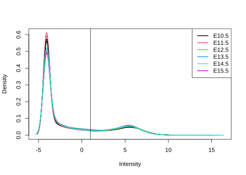
pdf(paste0(plot_dir,"cpm.density_mm10.face.genes.pdf", sep=''))
plotDensities(cpm.norm, group=mm10.face.genes$samples$group, legend="topright")
abline(v=1)
dev.off()svg
2 Filter counts, must be logcpm > 1 in both biological replicates at each stage
mm10.face.genes.filtered <- mm10.face.genes[rowSums(cpm.norm[,c(1,5)] > 1) >= 2 | rowSums(cpm.norm[,c(2,10)] > 1) >= 2 |
rowSums(cpm.norm[,c(3,6)] > 1) >= 2 | rowSums(cpm.norm[,c(4,9)] > 1) >= 2 |
rowSums(cpm.norm[,c(7,12)] > 1) >= 2 | rowSums(cpm.norm[,c(8,11)] > 1) >= 2, ]
dim(mm10.face.genes.filtered) # number of genes remaining[1] 15951 12mm10.face.genes.filtered.counts.df = as.data.frame(mm10.face.genes.filtered$counts)
geneIds = rownames(mm10.face.genes.filtered$counts)
mm10.face.genes.filtered.counts.df$geneID = geneIds
write.table(mm10.face.genes.filtered.counts.df, file =paste0(output_dir, "logcpm1.filtered.density_mm10.face.genes.txt"), sep="\t", quote=F, row.names=F, col.names = T)
pdf(paste0(plot_dir,"cpm.filtered.density_mm10.face.genes.pdf",sep=''))
plotDensities(cpm(mm10.face.genes.filtered, normalized.lib.sizes=TRUE, log=TRUE), group=mm10.face.genes$samples$group, legend="topright")
abline(v=1)
dev.off()svg
2 plotDensities(cpm(mm10.face.genes.filtered, normalized.lib.sizes=TRUE, log=TRUE), group=mm10.face.genes$samples$group, legend="topright")
abline(v=1)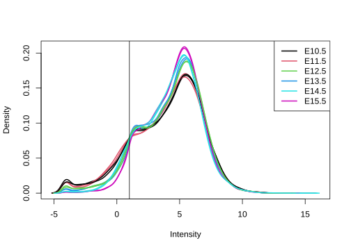
Normalise to library size and save counts as log counts per million
lcpm = cpm(mm10.face.genes.filtered, normalized.lib.sizes=TRUE, log=TRUE)Plot MDS and PCAs based on stages
col.group <- group
levels(col.group) <- brewer.pal(nlevels(col.group), "Set1")
col.group <- as.character(col.group)
pdf(paste0(plot_dir,"cpm.filtered.mds.pdf", sep=''))
plotMDS(lcpm, labels=group, col=col.group)
title(main="Sample groups")
dev.off()svg
2 plotMDS(lcpm, labels=group, col=col.group)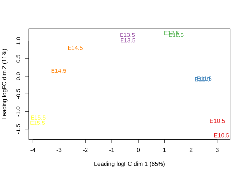 Based on the PCA and MDS plots there seems to be good clustering of the stages together and separation of stages that may be indicative of temporal dependent gene expression patterns.
Remove version from ENSEMBL ids
mm10.face.genes.filtered$genes <- removeVersion(mm10.face.genes.filtered$genes)
rownames(mm10.face.genes.filtered$counts) <- removeVersion(rownames(mm10.face.genes.filtered$counts))Time course sequencing data analysis (TCseq)
Set up the design
design = data.frame(sampleID = c("ENCFF720JIN_E10.5", "ENCFF031RGW_E11.5", "ENCFF644ENR_E12.5", "ENCFF406BLP_E13.5", "ENCFF932AJG_E14.5", "ENCFF040ZOW_E15.5",
"ENCFF336PNI_E10.5", "ENCFF343KWN_E11.5", "ENCFF908DRV_E12.5", "ENCFF241MSH_E13.5", "ENCFF584VXS_E14.5", "ENCFF745ACD_E15.5"),
group = c(1,2,3,4,5,6,1,2,3,4,5,6),
timepoint = c("10","11","12","13","14","15","10","11","12","13","14","15"))head(mm10.face.genes.filtered$counts) Samples
Tags /ENCFF031RGW_E11.5 /ENCFF040ZOW_E15.5 /ENCFF241MSH_E13.5
ENSMUSG00000000028 2113 1297 1114
ENSMUSG00000000031 8191 29568 13701
ENSMUSG00000000037 304 420 263
ENSMUSG00000000056 3874 3734 2872
ENSMUSG00000000058 298 1944 476
ENSMUSG00000000078 1786 3703 1427
Samples
Tags /ENCFF336PNI_E10.5 /ENCFF343KWN_E11.5 /ENCFF406BLP_E13.5
ENSMUSG00000000028 3183 2453.00 1423
ENSMUSG00000000031 10480 7774.17 15652
ENSMUSG00000000037 278 299.00 332
ENSMUSG00000000056 4397 3592.00 3423
ENSMUSG00000000058 265 308.00 627
ENSMUSG00000000078 1688 1611.00 1832
Samples
Tags /ENCFF584VXS_E14.5 /ENCFF644ENR_E12.5 /ENCFF720JIN_E10.5
ENSMUSG00000000028 1135 1517 3103
ENSMUSG00000000031 31509 11825 11249
ENSMUSG00000000037 488 322 295
ENSMUSG00000000056 2808 3357 4768
ENSMUSG00000000058 1264 343 249
ENSMUSG00000000078 2907 1851 1744
Samples
Tags /ENCFF745ACD_E15.5 /ENCFF908DRV_E12.5 /ENCFF932AJG_E14.5
ENSMUSG00000000028 1388 1974 1259
ENSMUSG00000000031 26397 15857 42243
ENSMUSG00000000037 425 444 509
ENSMUSG00000000056 3981 4974 3087
ENSMUSG00000000058 2438 491 2022
ENSMUSG00000000078 3576 2479 3561counts = mm10.face.genes.filtered$counts[,c(9,1,8,6,12,2,4,5,11,3,7,10)]
dt = as.data.table(counts)
matrix = as.matrix(dt)
rownames(matrix) = rownames(counts)
counts = ceiling(matrix) # round to integers
ah <- AnnotationHub()snapshotDate(): 2021-10-20query(ah, "EnsDb")AnnotationHub with 2962 records
# snapshotDate(): 2021-10-20
# $dataprovider: Ensembl
# $species: Homo sapiens, Xiphophorus maculatus, Xenopus tropicalis, Vicugna...
# $rdataclass: EnsDb
# additional mcols(): taxonomyid, genome, description,
# coordinate_1_based, maintainer, rdatadateadded, preparerclass, tags,
# rdatapath, sourceurl, sourcetype
# retrieve records with, e.g., 'object[["AH53185"]]'
title
AH53185 | Ensembl 87 EnsDb for Anolis Carolinensis
AH53186 | Ensembl 87 EnsDb for Ailuropoda Melanoleuca
AH53187 | Ensembl 87 EnsDb for Astyanax Mexicanus
AH53188 | Ensembl 87 EnsDb for Anas Platyrhynchos
AH53189 | Ensembl 87 EnsDb for Bos Taurus
... ...
AH98188 | Ensembl 105 EnsDb for Xiphophorus couchianus
AH98189 | Ensembl 105 EnsDb for Xiphophorus maculatus
AH98190 | Ensembl 105 EnsDb for Xenopus tropicalis
AH98191 | Ensembl 105 EnsDb for Zonotrichia albicollis
AH98192 | Ensembl 105 EnsDb for Zalophus californianusahDb <- query(ah, pattern = c("Mus musculus", "EnsDb", 87))
ahEdb <- ahDb[[1]]loading from cachegenomicFeature <- genes(ahEdb) # extract gene annotation information from EnsDb
dt=annoGR2DF(genomicFeature) # convert to dataframe
dt_subset = subset(dt, gene_id %in% rownames(counts)) # subset for IDs in RNA-seq dataset
dim(counts)[1] 15951 12dim(dt_subset)[1] 15718 12count_subset = subset(counts, rownames(counts) %in% dt_subset$gene_id)
genomicFeature = data.frame(id = dt_subset$gene_id, chr=dt_subset$chr,
start = dt_subset$start, end = dt_subset$end)
tca = TCA(design, count_subset, genomicFeature)Warning in TCA(design, count_subset, genomicFeature): All counts are coerced to
integers.Warning in TCA(design, count_subset, genomicFeature): colnames of design are all
forced to lowercase.tca <- DBanalysis(tca)
# performs differetial analysis by fitting read counts to a negative binomial generalized
# linear model
#DBresult(tca)
tca <- timecourseTable(tca, value = "expression", norm.method = "cpm", filter = TRUE, abs.fold = 2)
tcaTabledf = as.data.frame(tca@tcTable)
tcaTablerownames = rownames(tca@tcTable)
tcaTabledf$geneID = tcaTablerownames
write.table(tcaTabledf, file =paste0(output_dir, "timecourse.table.absFC2.mm10.face.genes.txt"), sep="\t", quote=F, row.names=T, col.names = T)
# abs.fold = 0, 15057 genes
# abs.fold = 0.5, 13432 genes
# abs.fold = 1, 8499 genes
# abs.fold = 2, 3515 genesDetermining the optimal division of clusters using a number of different methods
- SSE - sum of squared error SSE is defined as the sum of the squared distance between each member of a cluster and its cluster centroid.
- Calinski criterion is similar to finding ratio of between-cluster-variance/within-cluster-variance.
- Plot clusterno vs values (=BC/WC)
- Gap statistic
Sum of squared error
tcTable_matrix = as.matrix(tca@tcTable)
## SSE
tot_wss <- c()
for(i in 1:20)
{
cl <- kmeans(tcTable_matrix,centers = i, iter.max = 1000)
tot_wss[i] <- cl$tot.withinss
}
tot_wss [1] 3594714282 838155896 290521842 174433323 147195052 127122336
[7] 105363810 97955496 92107828 89074212 86711834 85317277
[13] 84738729 83238168 81686500 80864290 71827775 71454832
[19] 72263172 69178203p <- plot(x=1:20,
y=tot_wss,
type = "b",
xlab = "Number of clusters",
ylab = "Within groups sum of squares") 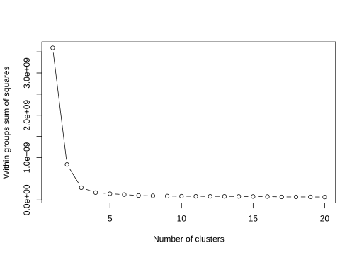
pdf(paste0(plot_dir,"sum.of.squared.error.pdf", sep=''))
print(p)NULLdev.off()svg
2 5-6 clusters optimal
Calinksi method
fit <- cascadeKM(tcTable_matrix, 1, 10, iter = 1000)
p <- plot(fit, sortg = TRUE, grpmts.plot = TRUE)
pdf(paste0(plot_dir, "calikski.bestfit.clusters.cpm.pdf"))
dev.off()svg
2 calinski.best <- as.numeric(which.max(fit$results[2,]))
calinski.best[1] 4is the best fit for number of clusters
Gap statistic
gap = clusGap(tcTable_matrix, kmeans, 10, B=30)Warning: did not converge in 10 iterationsplot(gap, main = "Gap statistic")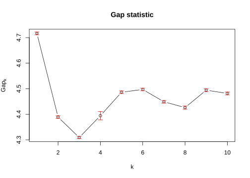
pdf(paste0(plot_dir, "gap.statistic.kmeans.pdf", sep=''))
plot(gap, main = "Gap statistic")
abline(v=which.max(gap$Tab[,3]), lty = 2)
dev.off()svg
2 Time clustering
- cmeans clustering is soft clustering (also known as fuzzy clustering)
- a data point can be assigned to multiple clusters
- membership values are used to indicate to what degree a data point belongs to each cluster
tca <- timeclust(tca, algo = "cm", k = 5, standardize = TRUE)
write.table(tca@clusterRes@membership, file = paste0(output_dir, "membership.values.diffExp.cmeans.clustering.mm10.face.genes.txt"), sep="\t", quote=F, row.names=T, col.names = T)
write.table(tca@clusterRes@cluster, file =paste0(output_dir, "diffExp.absFC2.cmeans.clustering.mm10.face.genes.txt"), sep="\t", quote=F, row.names=T, col.names = T)Plot timeclusters for gene expression data
print(timeclustplot(tca, value = "z-score(log CPM)", cols=2))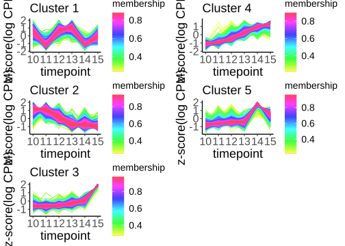
[[1]]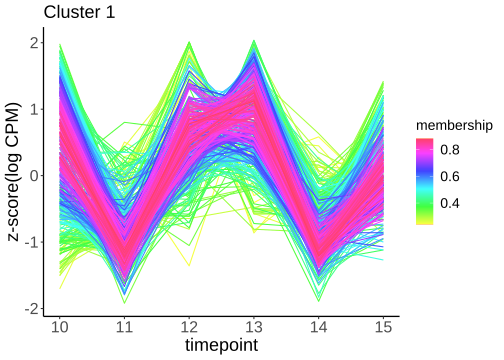
[[2]]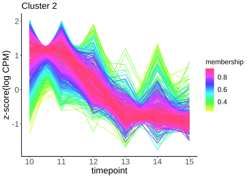
[[3]]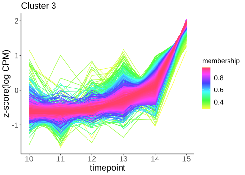
[[4]]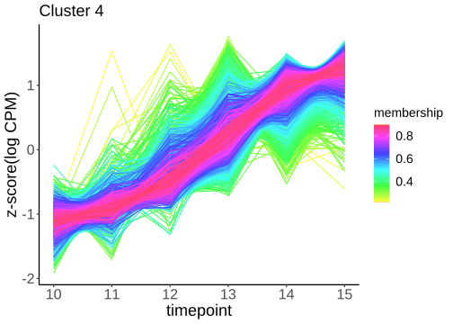
[[5]]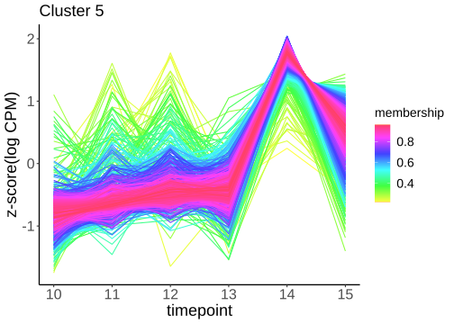
pdf(paste0(plot_dir,"timecluster.mm10expression.cmeans.cpm_FC2.pdf", sep=''))
timeclustplot(tca, value = "z-score(log CPM)", cols=2)[[1]]
[[2]]
[[3]]
[[4]]
[[5]]dev.off()svg
2 Compare peaks to differentially expressed gene clusters
Number of genes with peaks in merged promoters and enhancers - E15.5 = 16207 total with duplicate genes, 10817 unique - E14.5 = 19782 total with duplicate genes, 12053 unique - E13.5 = 26616 total with duplicate genes, 12949 unique - E12.5 = 16418 total with duplicate genes, 11381 unique - E11.5 = 13577 total with duplicate genes, 10465 unique - E10.5 = 21008 total with duplicate genes, 12288 unique - dunnart = 27899 total with duplicate genes, 9022 unique
compare.to.clusters <- function(dir, pattern, peakComparison, upsetMatrix, dunnart){
annot = list.files(annot_dir, pattern= pattern, full.names=T) # create list of files in directory
annot = as.list(annot)
annot = lapply(annot, function(x) fread(x, header=TRUE, sep="\t", quote = "", na.strings=c("", "NA"), fill=TRUE)) # read in all files
names(annot) = c("dunnart","E10.5","E11.5","E12.5", "E13.5","E14.5", "E15.5")
colnames(annot[[1]])[19] <- "geneID"
annot = lapply(annot, function(x) x=setnames(x, old="geneId", new="mouseensembl", skip_absent=TRUE) %>% as.data.table())
annot.subset = lapply(annot, function(x) x %>% dplyr::select(mouseensembl) %>% as.data.table() %>% unique())
annot.subset = Map(mutate, annot.subset, stage = names(annot.subset))
# join cluster data from above
clusters = as.data.frame(clustCluster(tca@clusterRes))
colnames(clusters) = "cluster"
cluster <- tibble::rownames_to_column(clusters, "mouseensembl") %>% as.data.table()# add rownames as a column
cluster.split = split(cluster, by="cluster")
merged.datalist = append(cluster.split, annot.subset)
fulljoin.datalist <- merged.datalist %>% purrr::reduce(full_join, by = "mouseensembl") # join all dataframes by ensembl geneID
fulljoin.datalist[is.na(fulljoin.datalist)] <- 0
fulljoin.datalist = as.data.frame(fulljoin.datalist)
colnames(fulljoin.datalist) = c("geneid", names(merged.datalist))
geneId = fulljoin.datalist$geneid
upset.df = data.frame(lapply(fulljoin.datalist[,2:13], function(x) as.numeric(x!="0")))
rownames(upset.df) = geneId
colnames(upset.df) = c("c3", "c5", "c4", "c1", "c2", "dunnart", "E10.5", "E11.5", "E12.5", "E13.5", "E14.5", "E15.5")
write.table(upset.df, upsetMatrix, sep="\t", quote=F, row.names=T, col.names = T)
write.table(fulljoin.datalist, peakComparison, sep="\t", quote=F, row.names=T, col.names = T)
p <- upset(upset.df, set_size.angles = 45,
order.by="freq", text.scale = 2,empty.intersections = "off",
sets = c("dunnart", "c1","c2","c3","c4","c5"),
intersections = list(
list("dunnart", "c1"),
list("dunnart", "c2"),
list("dunnart", "c3"),
list("dunnart", "c4"),
list("dunnart", "c5")),
nsets=6, keep.order = T, mainbar.y.label = "number of genes"
)
pdf(paste0(plot_dir,dunnart,sep=""))
print(p)
dev.off()
return(list(fulljoin.datalist, p))
}Dunnart genes with enhancer-associated peaks compared to temporal gene expression clusters
enhancers = compare.to.clusters(
peakComparison = "enhancer_peak_comparison_to_clusters.txt",
upsetMatrix = "enhancer_upset_matrix_comparison_to_clusters.txt",
dunnart = "dunnart_enhancer_comparison_to_clusters.pdf",
pattern = "dunnart_enhancer_annotationConvertedIDs.txt|*.5_enhancer_annotation.txt")
enhancers[[2]]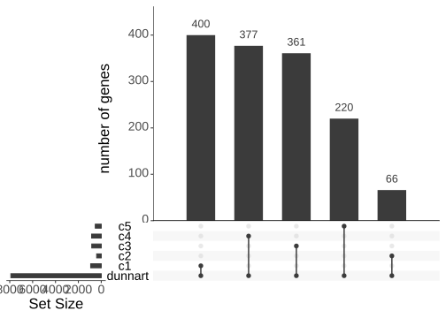 ### Dunnart genes with promoter-associated peaks compared to temporal gene expression clusters
promoters = compare.to.clusters(
peakComparison = "promoter_peak_comparison_to_clusters.txt",
upsetMatrix = "promoter_upset_matrix_comparison_to_clusters.txt",
dunnart = "dunnart_promoter_comparison_to_clusters.pdf",
pattern = "*.5_cluster1_annotation.txt|dunnart_promoter_cluster1_annotationConvertedIDs.txt")
promoters[[2]]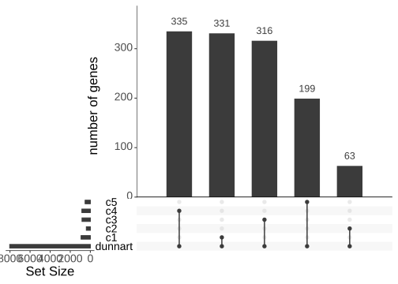
Hypergeometric testing for enrichment of dunnart genes with peaks in clusters
x, q: vector of quantiles representing the number of white balls
drawn without replacement from an urn which contains both
black and white balls.
m: the number of white balls in the urn.
n: the number of black balls in the urn.
k: the number of balls drawn from the urn, hence must be in
0,1,..., m+n.q = genes with dunnart peaks and in cluster m = genes in cluster n = genes not in cluster ~15000 (doesn’t matter if there is a peak or not) k = dunnart genes with peaks that also have expression data
phyper(q, m, n, k, lower.tail= FALSE)
enrichment <- function(x, dunnart_peaks, file){
dt = as.data.table(x)
dt$geneid = x$geneid
names(dt) = c("geneid", "c3", "c5", "c4", "c1", "c2",
"dunnart", "E10.5", "E11.5", "E12.5",
"E13.5", "E14.5", "E15.5")
test_count_table <- function(x, column){
c <- dt %>% filter(x[[column]] == column)
c1 = count(c, c1)
c2 = count(c, c2)
c3 = count(c, c3)
c4 = count(c, c4)
c5 = count(c, c5)
k = sum(c1$n[2], c2$n[2], c3$n[2], c4$n[2], c5$n[2]) # k = all genes with dunnart peaks and assigned to a cluster
clusters = c("c1", "c2", "c3", "c4", "c5")
q = c(c1$n[2], c2$n[2], c3$n[2], c4$n[2], c5$n[2])
# k = rep(c(length(DGE_genes_with_dunnart_peaks)), 5)
#k = c(c1$n[1]-c1$n[2], c2$n[1]-c2$n[2],c3$n[1]-c3$n[2],c4$n[1]-c4$n[2],c5$n[1]-c5$n[2])
# k = c(all-c1$n[2], all-c2$n[2], all-c3$n[2], all-c4$n[2], all-c5$n[2]) # or is this k?
count_table = data.frame(clusters, q, k) %>% as.data.table()
}
dunnart = test_count_table(dt, "dunnart")
bkgrd_count_table <- function(x){
c1 = count(x, c1)
c2 = count(x, c2)
c3 = count(x, c3)
c4 = count(x, c4)
c5 = count(x, c5)
all = sum(c1$n[2], c2$n[2], c3$n[2], c4$n[2], c5$n[2])
clusters = c("c1", "c2", "c3", "c4", "c5")
m = c(c1$n[2], c2$n[2], c3$n[2], c4$n[2], c5$n[2])
n = c(all-c1$n[2],
all-c2$n[2],
all-c3$n[2],
all-c4$n[2],
all-c5$n[2]
)
# n = c(15348 - c1$n[2], 15348 - c2$n[2], 15348 - c3$n[2], 15348 - c4$n[2], 15348 - c5$n[2])
count_table = data.frame(clusters, m, n) %>% as.data.table()
}
bkgrd = bkgrd_count_table(dt)
concatenate_df=function(x){
bkgrd=bkgrd
test=copy(x)
combine=test[bkgrd,on='clusters',nomatch=0]
return(combine)
}
dunnart_vs_bkgrd=concatenate_df(dunnart)
dunnart_vs_bkgrd=split(dunnart_vs_bkgrd, by = "clusters")
# phyper(q, m, n, k, lower.tail = TRUE, log.p = FALSE)
hyper_p = lapply(dunnart_vs_bkgrd, function(x) {x$hyper_p = with(x, phyper(q,m,n, k, lower.tail= FALSE));return(x)})
hyper_p = Map(mutate, hyper_p, comparison = names(hyper_p))
hyper_p = rbindlist(hyper_p,)
pvalues_table=data.table(pval=hyper_p$hyper_p) ## then this converts the list of pvalues into a column (orders are maintained, so the first pval refers to the fisrt row in the input dataframe and so on)
pvalues_table=pvalues_table[
,adj_p:=p.adjust(pval,method = 'bonferroni')][ ## this creates another column with the adj_pvalues
,log10_p_adjust:=-log10(adj_p)
][
,significant_score:=ifelse(`adj_p`<=0.0001,'****',
ifelse(`adj_p`>0.0001 &`adj_p`<=0.001,'***',
ifelse(`adj_p`>0.001 & `adj_p`<=0.01,'**',
ifelse(`adj_p`>0.01 & `adj_p`<=0.05,'*',' '))))
] ## this is just for quick visualisation/subsecting of only the significant ones
hyper_p_adjusted = cbind(hyper_p, pvalues_table)
write.table(hyper_p_adjusted, file=paste0(output_dir, file), sep="\t", quote=FALSE, row.names=FALSE)
return(hyper_p_adjusted)
}
promoter_enrichment = enrichment(x = promoters[[1]], dunnart_peaks = "dunnart_promoter_cluster1_annotationConvertedIDs.txt", file = "hyper_p_adjusted_promoters.txt")
kable(promoter_enrichment, caption="Adjusted pvalues for enrichment analysis for genes with high confidence promoter-associated peaks")| clusters | q | k | m | n | hyper_p | comparison | pval | adj_p | log10_p_adjust | significant_score |
|---|---|---|---|---|---|---|---|---|---|---|
| c1 | 331 | 1244 | 923 | 2592 | 0.3484622 | c1 | 0.3484622 | 1.0000000 | 0.0000000 | |
| c2 | 63 | 1244 | 400 | 3115 | 1.0000000 | c2 | 1.0000000 | 1.0000000 | 0.0000000 | |
| c3 | 316 | 1244 | 828 | 2687 | 0.0259124 | c3 | 0.0259124 | 0.1295619 | 0.8875228 | |
| c4 | 335 | 1244 | 843 | 2672 | 0.0011309 | c4 | 0.0011309 | 0.0056544 | 2.2476172 | ** |
| c5 | 199 | 1244 | 521 | 2994 | 0.0672958 | c5 | 0.0672958 | 0.3364790 | 0.4730420 |
enhancer_enrichment = enrichment(x = enhancers[[1]], dunnart_peaks = "dunnart_enhancer_annotationConvertedIDs.txt", file = "hyper_p_adjusted_promoters.txt")
kable(enhancer_enrichment, caption="Adjusted pvalues for enrichment analysis for genes with enhancer-associated peaks")| clusters | q | k | m | n | hyper_p | comparison | pval | adj_p | log10_p_adjust | significant_score |
|---|---|---|---|---|---|---|---|---|---|---|
| c1 | 400 | 1424 | 923 | 2592 | 0.0191625 | c1 | 0.0191625 | 0.0958127 | 1.0185771 | |
| c2 | 66 | 1424 | 400 | 3115 | 1.0000000 | c2 | 1.0000000 | 1.0000000 | 0.0000000 | |
| c3 | 361 | 1424 | 828 | 2687 | 0.0176107 | c3 | 0.0176107 | 0.0880533 | 1.0552543 | |
| c4 | 377 | 1424 | 843 | 2672 | 0.0019440 | c4 | 0.0019440 | 0.0097201 | 2.0123300 | ** |
| c5 | 220 | 1424 | 521 | 2994 | 0.1807811 | c5 | 0.1807811 | 0.9039057 | 0.0438769 |
Gene Ontology on differentially expressed clusters
mmGO = godata('org.Mm.eg.db', ont="BP") preparing gene to GO mapping data...preparing IC data...clusters = as.data.frame(clustCluster(tca@clusterRes))
cluster.tibble <- tibble::rownames_to_column(clusters) %>% as.data.table()# add rownames as a column
cluster.split = split(cluster.tibble, by="clustCluster(tca@clusterRes)")
genes = lapply(cluster.split, function(i) as.list(i[,-2]))
genes = lapply(genes, function(x) unlist(x, recursive = TRUE, use.names=FALSE))
names(genes) = c("c3", "c5", "c4", "c1", "c2")
backg = fread("output/annotations/mart_export.txt")
backg = unlist(backg[,1])
cluster_subset = list(genes$c2, genes$c4)
names(cluster_subset) = c("cluster 2", "cluster 4")
# compare cluster GO enrichment
go_cluster = compareCluster(
geneCluster = genes,
fun = enrichGO,
ont="BP",
universe = backg,
keyType = "ENSEMBL",
pvalueCutoff = 0.05,
OrgDb = org.Mm.eg.db)
ck = pairwise_termsim(go_cluster, method = "Wang", semData=mmGO)
dotplot(ck)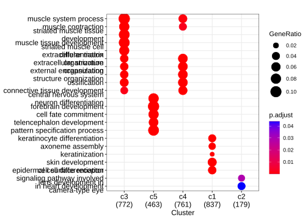
cluster2_go = enrichGO(gene =genes$c4,
keyType = "ENSEMBL",
OrgDb = org.Mm.eg.db,
ont = "BP",
#universe = bg,
pAdjustMethod = "BH",
pvalueCutoff = 0.01,
readable = TRUE)
write.table(cluster2_go, file="cluster2_enrichGO.txt", sep="\t", quote=F, row.names=F)
write.table(cluster2_go, file="cluster2_enrichGO.txt", sep="\t", quote=F, row.names=F)
suppressWarnings(gene.df <- bitr(geneID=genes$c2, fromType="ENSEMBL", toType="ENTREZID", OrgDb="org.Mm.eg.db" ))'select()' returned 1:many mapping between keys and columns ## kegg analysis
kk <- enrichKEGG(gene = gene.df$ENTREZID, organism = "mmu", pvalueCutoff=0.01)Reading KEGG annotation online:Reading KEGG annotation online:write.table(kk, file="cluster2_enrichGO.txt", sep="\t", quote=F, row.names=F)
## barplot
pdf(paste0(plot_dir, "tcseq_cluster4_gene_ontology_fc2_barplot.pdf", sep=''), width = 8, height = 9)
print(barplot(cluster2_go, showCategory = 20) +
scale_color_viridis() +
theme(axis.text.x = element_text(angle = 45, hjust=1)))
dev.off()svg
2 pdf(paste0(plot_dir, "tcseq_cluster2_kegg_fc2_barplot.pdf", sep=''), width = 9, height = 5)
print(barplot(kk, showCategory = 15) +
scale_color_viridis() +
theme(axis.text.x = element_text(angle = 45, hjust=1)))
dev.off()svg
2 ## Dotplot
pdf(paste0(plot_dir, "tcseq_cluster2_cluster4_gene_ontology_fc2.pdf", sep=''), width = 10, height = 10)
print(dotplot(ck, showCategory = 20) +
scale_color_viridis() +
theme(axis.text.x = element_text(angle = 45, hjust=1)))Scale for 'colour' is already present. Adding another scale for 'colour',
which will replace the existing scale.dev.off()svg
2
sessionInfo()R version 4.1.0 (2021-05-18)
Platform: x86_64-pc-linux-gnu (64-bit)
Running under: Red Hat Enterprise Linux
Matrix products: default
BLAS/LAPACK: /usr/local/easybuild-2019/easybuild/software/compiler/gcc/10.2.0/openblas/0.3.12/lib/libopenblas_haswellp-r0.3.12.so
locale:
[1] LC_CTYPE=en_AU.UTF-8 LC_NUMERIC=C
[3] LC_TIME=en_AU.UTF-8 LC_COLLATE=en_AU.UTF-8
[5] LC_MONETARY=en_AU.UTF-8 LC_MESSAGES=en_AU.UTF-8
[7] LC_PAPER=en_AU.UTF-8 LC_NAME=C
[9] LC_ADDRESS=C LC_TELEPHONE=C
[11] LC_MEASUREMENT=en_AU.UTF-8 LC_IDENTIFICATION=C
attached base packages:
[1] stats4 stats graphics grDevices utils datasets methods
[8] base
other attached packages:
[1] viridis_0.6.2 viridisLite_0.4.0
[3] knitr_1.33 AnnotationHub_3.2.2
[5] BiocFileCache_2.2.1 dbplyr_2.1.1
[7] enrichplot_1.14.2 clusterProfiler_4.2.2
[9] GOSemSim_2.20.0 org.Mm.eg.db_3.14.0
[11] Repitools_1.40.0 ggfortify_0.4.14
[13] GeneStructureTools_1.14.0 ensembldb_2.18.4
[15] AnnotationFilter_1.18.0 GenomicFeatures_1.46.5
[17] AnnotationDbi_1.56.2 Biobase_2.54.0
[19] GenomicRanges_1.46.1 GenomeInfoDb_1.30.1
[21] IRanges_2.28.0 S4Vectors_0.32.4
[23] BiocGenerics_0.40.0 edgeR_3.36.0
[25] Glimma_2.4.0 cluster_2.1.2
[27] limma_3.50.3 biomaRt_2.50.3
[29] data.table_1.14.0 RColorBrewer_1.1-2
[31] forcats_0.5.1 stringr_1.4.0
[33] dplyr_1.0.8 purrr_0.3.4
[35] readr_1.4.0 tidyr_1.1.3
[37] tibble_3.1.2 ggplot2_3.3.3
[39] tidyverse_1.3.1 UpSetR_1.4.0
[41] vegan_2.5-7 lattice_0.20-44
[43] permute_0.9-5 TCseq_1.18.0
[45] workflowr_1.7.0
loaded via a namespace (and not attached):
[1] rappdirs_0.3.3 rtracklayer_1.54.0
[3] bit64_4.0.5 DelayedArray_0.20.0
[5] rpart_4.1-15 KEGGREST_1.34.0
[7] RCurl_1.98-1.3 generics_0.1.0
[9] preprocessCore_1.56.0 gsmoothr_0.1.7
[11] callr_3.7.0 RSQLite_2.2.7
[13] shadowtext_0.1.1 proxy_0.4-25
[15] bit_4.0.4 xml2_1.3.2
[17] lubridate_1.7.10 httpuv_1.6.1
[19] SummarizedExperiment_1.24.0 assertthat_0.2.1
[21] xfun_0.23 hms_1.1.0
[23] jquerylib_0.1.4 evaluate_0.14
[25] DNAcopy_1.68.0 promises_1.2.0.1
[27] fansi_0.5.0 restfulr_0.0.13
[29] progress_1.2.2 caTools_1.18.2
[31] readxl_1.3.1 igraph_1.2.6
[33] DBI_1.1.1 geneplotter_1.72.0
[35] Rsolnp_1.16 htmlwidgets_1.5.3
[37] stringdist_0.9.6.3 ellipsis_0.3.2
[39] backports_1.2.1 annotate_1.72.0
[41] MatrixGenerics_1.6.0 vctrs_0.3.8
[43] cachem_1.0.5 withr_2.4.2
[45] ggforce_0.3.3 Gviz_1.38.4
[47] BSgenome_1.62.0 checkmate_2.0.0
[49] treeio_1.18.1 GenomicAlignments_1.30.0
[51] prettyunits_1.1.1 DOSE_3.20.1
[53] ape_5.5 lazyeval_0.2.2
[55] crayon_1.4.1 genefilter_1.76.0
[57] labeling_0.4.2 pkgconfig_2.0.3
[59] tweenr_1.0.2 nlme_3.1-152
[61] ProtGenerics_1.26.0 nnet_7.3-16
[63] rlang_1.0.2 Ringo_1.58.0
[65] lifecycle_1.0.1 downloader_0.4
[67] filelock_1.0.2 affyio_1.64.0
[69] modelr_0.1.8 dichromat_2.0-0
[71] cellranger_1.1.0 rprojroot_2.0.2
[73] polyclip_1.10-0 matrixStats_0.62.0
[75] aplot_0.1.3 Matrix_1.3-4
[77] reprex_2.0.0 base64enc_0.1-3
[79] whisker_0.4 processx_3.5.2
[81] png_0.1-7 rjson_0.2.20
[83] BSgenome.Mmusculus.UCSC.mm10_1.4.3 bitops_1.0-7
[85] getPass_0.2-2 KernSmooth_2.23-20
[87] Biostrings_2.62.0 blob_1.2.1
[89] qvalue_2.26.0 gridGraphics_0.5-1
[91] jpeg_0.1-8.1 scales_1.1.1
[93] memoise_2.0.0 magrittr_2.0.1
[95] plyr_1.8.6 gplots_3.1.1
[97] zlibbioc_1.40.0 scatterpie_0.1.7
[99] compiler_4.1.0 BiocIO_1.4.0
[101] DESeq2_1.34.0 Rsamtools_2.10.0
[103] cli_2.5.0 affy_1.72.0
[105] XVector_0.34.0 patchwork_1.1.1
[107] ps_1.6.0 htmlTable_2.2.1
[109] Formula_1.2-4 MASS_7.3-54
[111] mgcv_1.8-36 tidyselect_1.1.1
[113] vsn_3.62.0 stringi_1.6.2
[115] highr_0.9 yaml_2.2.1
[117] locfit_1.5-9.4 ggrepel_0.9.1
[119] latticeExtra_0.6-29 grid_4.1.0
[121] sass_0.4.0 VariantAnnotation_1.40.0
[123] fastmatch_1.1-0 tools_4.1.0
[125] parallel_4.1.0 rstudioapi_0.13
[127] foreign_0.8-81 git2r_0.28.0
[129] gridExtra_2.3 farver_2.1.0
[131] ggraph_2.0.5 digest_0.6.27
[133] BiocManager_1.30.16 shiny_1.6.0
[135] Rcpp_1.0.8.3 broom_0.7.6
[137] BiocVersion_3.14.0 later_1.2.0
[139] httr_1.4.2 biovizBase_1.42.0
[141] colorspace_2.0-1 rvest_1.0.0
[143] XML_3.99-0.6 fs_1.5.0
[145] truncnorm_1.0-8 splines_4.1.0
[147] yulab.utils_0.0.4 tidytree_0.3.9
[149] graphlayouts_0.7.1 ggplotify_0.1.0
[151] xtable_1.8-4 ggtree_3.2.1
[153] jsonlite_1.7.2 tidygraph_1.2.0
[155] ggfun_0.0.6 R6_2.5.0
[157] Hmisc_4.5-0 mime_0.10
[159] pillar_1.6.1 htmltools_0.5.1.1
[161] glue_1.4.2 fastmap_1.1.0
[163] BiocParallel_1.28.3 interactiveDisplayBase_1.32.0
[165] class_7.3-19 fgsea_1.20.0
[167] utf8_1.2.1 bslib_0.2.5.1
[169] curl_4.3.1 gtools_3.8.2
[171] GO.db_3.14.0 survival_3.2-11
[173] rmarkdown_2.8 munsell_0.5.0
[175] e1071_1.7-7 DO.db_2.9
[177] GenomeInfoDbData_1.2.7 haven_2.4.1
[179] reshape2_1.4.4 gtable_0.3.0